Dashboard Executivo
Inteligência & Análise 2026/2027
ou preencha os dados
© Radar São José. Todos os direitos reservados.
Inteligência & Análise 2026/2027
Clique em qualquer bloco abaixo para navegar diretamente para a seção desejada


Comportamento, consumo e vida urbana
Um retrato dos hábitos, das experiências e das expectativas de quem vive em São José dos Campos, a partir de dados, entrevistas e observação da cidade.
São José dos Campos é conhecida pela força industrial, pela engenharia e pela tecnologia. Essa imagem explica uma parte importante da cidade, mas não responde às perguntas que aparecem no bar, no ônibus, no parque, no comércio do bairro e nas escolhas de fim de semana. O Radar São José nasceu para observar essa outra camada.
A pesquisa cruza números, entrevistas e observação direta para entender como as pessoas vivem, escolhem, consomem, circulam e se relacionam com São José.
Como o morador escolhe onde sair?
O que considera caro?
Que regiões atravessa?
Onde encontra cultura?
Quando decide consumir fora?
O que espera de uma cidade acostumada a se apresentar como polo de futuro?
Responder exige olhar além de renda, PIB e número de empresas. É preciso entender o que as pessoas usam, o que evitam, o que sentem falta, como comparam São José com outros lugares e o que acontece quando ninguém está respondendo a um formulário.

Head de pesquisa · Research & Strategy
Profissional de pesquisa e inteligência de mercado com mais de dez anos de experiência, incluindo trabalhos para Ambev, Pernod Ricard, Sadia e CNN Brasil. Nascido em São José dos Campos, construiu parte da carreira também em São Paulo. No Radar, conduz a investigação, a leitura comportamental e a estratégia.

Head digital · Growth & Digital Strategy
Empreendedora e profissional de growth marketing, tráfego, automação, aquisição e conversão. No Radar, conecta os diagnósticos da pesquisa à comunicação, ao desenvolvimento de mercado e às possibilidades de ativação digital.

477moradores
Mostra padrões declarados de consumo, circulação, percepção e comportamento. Permite comparar regiões, idades, renda, gênero e outros recortes da amostra, dimensionando recorrências e diferenças entre grupos.

10pessoas · ~1h30 por conversa
Aprofundam linguagem, motivações, experiências e contradições por trás das escolhas. Dão voz e nuance humana às tensões que um percentual sozinho não explica.
Dezenasde incursões pela cidade
Observa pessoas, movimentos, lugares e usos no cotidiano, sem o filtro de uma resposta formal. Bares, restaurantes, parques, shoppings, ônibus, ruas, feiras, comércio de bairro e eventos entram na investigação.
O Radar cruza o que as pessoas respondem, o que contam em profundidade e o que aparece na vida urbana.
Nem sempre as três fontes dizem exatamente a mesma coisa. Quando convergem, a história ganha força. Quando entram em tensão, a contradição também importa.
Onde sair. O que consumir. Por onde circular.
As respostas dos moradores mostram como São José é vivida no cotidiano: o que aproxima as pessoas da cidade, o que as leva a buscar experiências fora e como essas escolhas mudam entre grupos e regiões.
Como São José aparece nas escolhas de quem mora aqui
Uso da cidade, lazer, consumo, mobilidade, identidade, território, informação e intenção de gasto.
Orgulho de morar em São José
A cidade é amplamente valorizada por sua qualidade e estrutura
Saem para outras cidades
Sempre ou às vezes vão para fora passear ou comer fora
Os dois números não se anulam. O morador pode gostar de São José, construir vida aqui e ainda incluir outros municípios no repertório de lazer. Orgulho não funciona como barreira na Dutra.
A circulação para fora ajuda a deslocar a pergunta. Em vez de perguntar apenas se a cidade “tem opções”, vale observar em que momentos ela deixa de ser a primeira escolha. Pode ser preço, variedade, horário, repertório, evento específico ou simplesmente o desejo de fazer algo que aqui não parece disponível do mesmo jeito.
Essa tensão acompanha boa parte do relatório. São José não aparece como uma cidade rejeitada. Aparece como uma cidade comparada.
Distribuição completa das respostas válidas na amostra.
São José não aparece como uma cidade sem lazer. A frequência local é alta. O ponto de tensão está na diferença entre usar a oferta e se reconhecer nela.
Uma pessoa pode frequentar restaurantes, parques ou shoppings todos os meses e ainda sentir que a programação cultural fala pouco com ela. Pode gostar de morar aqui e buscar fora aquilo que considera mais alinhado ao próprio gosto.
Isso importa porque “consumo local” não é sinônimo de “identificação local”. O uso mostra presença. A identificação mostra vínculo.
A cidade consegue fazer muita gente sair de casa. A próxima pergunta é quantas dessas saídas parecem realmente feitas para ela.
avaliam positivamente as opções de cultura e eventos.
também saem sempre ou às vezes para passear ou comer fora.
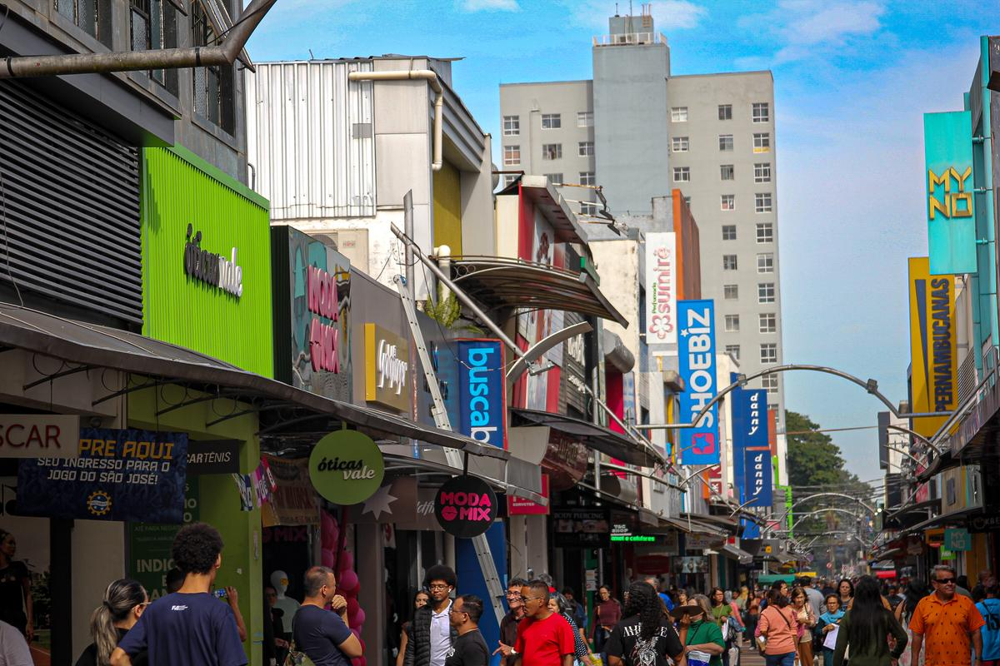
têm lazer local ao menos uma vez por mês.
dizem que as festas e eventos da cidade não combinam com seu jeito.
O fluxo entre bairros mostra que parte dos moradores atravessa São José para encontrar as opções que procura. Centro e Oeste formam o eixo de maior atração no conjunto da amostra, enquanto a Zona Sul aparece como outro polo importante de circulação.
Esse deslocamento ajuda a separar duas coisas que às vezes parecem iguais: onde a pessoa mora e onde ela sente que a cidade “acontece”. Para alguns, atravessar bairros é rotina. Para outros, distância, trânsito, passagem ou horário já entram como filtro antes da escolha.
A circulação não diz que uma região é “melhor” do que outra. Ela mostra onde a oferta percebida consegue puxar moradores para fora do próprio território.
Moradia e lazer nem sempre ocupam o mesmo mapa. E toda vez que esses mapas se afastam, mobilidade entra na conta da experiência.
Outros 20,1% a definem principalmente como moderna e cheia de tecnologia, enquanto 14,3% a aproximam mais da tranquilidade de uma cidade do interior. A nota média de qualidade de vida é 3,7 em 5.
A resposta híbrida diz bastante sobre a expectativa local. Parte do valor de São José está justamente em não parecer São Paulo. O morador pode querer tecnologia, trabalho qualificado e serviços melhores sem desejar o ritmo, o custo ou o desgaste de uma metrópole.
Essa mistura também ajuda a entender por que novidade e previsibilidade convivem tão bem na cidade. O joseense pode querer mais cultura, mais variedade e mais vida urbana, mas sem abrir mão da sensação de controle que associa ao lugar onde mora.
O ideal de cidade, para boa parte da amostra, não está em escolher entre futuro e sossego. Está em conseguir os dois.
definem principalmente como moderna e cheia de tecnologia.
aproximam mais da tranquilidade de uma cidade do interior.
escolheram “um pouco das duas coisas” quando perguntados se São José é uma cidade moderna e tecnológica ou tranquila com jeito de interior.
Nota média de qualidade de vida atribuída pelos moradores.
marcaram melhorar o ônibus e o trânsito.
pediram mais segurança.
marcaram mais festas e eventos culturais.
pediram mais opções para sair à noite.
citaram parques e praças mais bem cuidados.
marcaram restaurantes e lanchonetes diferentes.
Na pergunta de múltipla escolha sobre o que mais falta em São José:
Apenas 6,3% selecionaram “não falta nada”. Como a pergunta aceitava múltiplas respostas, os percentuais não somam 100%.
O resultado é importante porque desloca a ideia de “demanda reprimida” para além do comércio. O morador não pede apenas mais lugares para gastar. Pede condições para circular, permanecer, se sentir seguro e encontrar programação.
Isso muda a leitura de oportunidade. Um novo restaurante pode resolver uma carência de variedade, mas não resolve sozinho uma noite que termina cedo por medo, transporte ruim ou falta de opções ao redor.
A cidade desejada aparece como experiência completa, não como catálogo de estabelecimentos.
“Uma cidade que parece grande mas é muito conservadora. Uma grande cidade pequena.”
Gostar de São José não significa achar que a cidade está pronta. Nas respostas abertas, elogios à qualidade de vida, localização, organização e oportunidades de trabalho convivem com críticas a custo de vida, trânsito, segurança, concentração de serviços e oferta cultural.
Essa convivência interessa mais do que uma nota isolada. O morador que reclama nem sempre quer ir embora. Muitas vezes ele está comparando a cidade que conhece com a cidade que acredita que São José poderia ser.
É uma diferença importante. Crítica de pertencimento é diferente de rejeição. Ela nasce de vínculo, expectativa e comparação.
A frase resume uma tensão que vai reaparecer no estudo: São José é grande o bastante para gerar expectativa e pequena o bastante para ainda ser comparada à própria promessa.
“Algumas opções de diversão na cidade ainda são subdesenvolvidas. Quem quer ver coisas legais vai pra SP. Aqui é tudo muito mais ou menos.”
Quando moradores falam de lazer e consumo, “falta” não significa necessariamente que não exista restaurante, bar, evento ou serviço. Em várias falas, a escassez aparece como pouca variedade, formatos parecidos, horários curtos, preço alto e experiências que parecem intercambiáveis.
Isso ajuda a entender por que uma cidade pode ter muitos estabelecimentos e ainda produzir sensação de pouca escolha. Quantidade e diferença percebida não são a mesma coisa.
Para quem empreende, a consequência é direta. Abrir mais um negócio numa categoria existente não responde automaticamente a uma carência. A pergunta precisa ser mais específica: o que essa nova operação oferece que muda de verdade a decisão de alguém?
Quando o morador diz que “não tem opção”, vale perguntar se falta quantidade ou se falta motivo para escolher.
ficam sabendo de notícias por páginas de Instagram.
usam portais de notícias.
citam canais de TV.
conversam com amigos e família.
usam rádio.
citam grupos de WhatsApp ou Telegram.
A pergunta aceitava múltiplas respostas. O resultado mostra uma dieta de informação espalhada por vários canais, com presença digital muito forte.
Isso tem efeito prático sobre eventos, negócios e cultura. Uma programação pode existir e permanecer invisível se circular apenas em um canal que o público não acompanha. Ao mesmo tempo, depender só de Instagram deixa parte da cidade de fora.
A descoberta local é fragmentada. O morador monta a própria agenda com pedaços vindos de página, portal, amigo, rádio, grupo e feed.
Informar melhor exige estar nos caminhos que o morador realmente usa para descobrir o que acontece na cidade.
usam o Instagram como principal rede para encontrar lugares e referências na cidade.
dizem já ter ido a algum lugar apenas porque viram um influenciador local indicando.
Ao mesmo tempo, 30,4% dizem já ter ido a algum lugar apenas porque viram um influenciador local indicando.
A diferença entre os dois números é importante. Rede social funciona como vitrine, busca e repertório. A indicação de uma pessoa é uma das portas de entrada, não a experiência inteira.
Para marcas locais, o desafio está menos em “ter um influenciador” e mais em construir um lugar, produto ou serviço que continue fazendo sentido depois do clique.
“Cite três influenciadores de São José.”
A resposta era opcional. Quem não lembrava de ninguém podia deixar o campo em branco.
Os nomes abaixo vieram das respostas dos participantes e foram organizados em dois níveis: os mais lembrados e um diretório amplo de perfis ligados à cidade.
A lista não mede número de seguidores, alcance, engajamento ou retorno comercial. Ela mostra lembrança espontânea dentro da amostra do Radar em 2026.
Use a busca para localizar nome ou @handle. Cada card mantém o link direto para o perfil correspondente.
@sanjadicas
@jonasalmeida
@mcdavipaiva
@sjc_ity
@ficadicasjc
@kellymariamaria
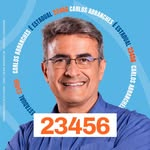
7@carlosabranchesoficial
@exploresjc
@trollandosaojose
@ocasaldesjc
Ranking por número de menções espontâneas na pergunta aberta sobre influenciadores de São José dos Campos. Ser lembrado não é o mesmo que ter maior audiência, maior alcance ou maior poder de conversão.
escolheram o preço como principal fator.
apontaram lugar bonito e agradável.
citaram indicação de amigos ou família.
não escolhem só porque é bonito para fotos.
Quando perguntamos o que pesa na escolha de um restaurante ou bar, 27,9% escolheram preço e 27,5% apontaram um lugar bonito e agradável. Outros 20,5% citaram indicação de amigos ou família, enquanto 5,9% colocaram proximidade de casa como principal fator.
Somados, preço e ambiente aparecem em 55,3% das respostas. A combinação ajuda a explicar por que “valor” não pode ser lido apenas como barato. O morador avalia quanto custa e o que recebe em troca.
Há um detalhe que evita uma leitura superficial do instagramável: 64,6% dizem que não escolhem um lugar só porque ele é bonito para tirar fotos e postar. A estética ajuda a abrir a porta, mas não sustenta a experiência sozinha.
Ambiente, preço e recomendação trabalham juntos. Um lugar pode ser bonito e parecer caro. Pode ser barato e não dar vontade de voltar. Pode chegar pela indicação de alguém e perder força no primeiro atendimento.
A decisão acontece na soma, não num único atributo.
usam carro próprio.
usam aplicativos como Uber e 99.
usam ônibus.
usam Linha Verde.
A pergunta aceitava múltiplas respostas. Isso significa que o morador pode dirigir para trabalhar, usar aplicativo à noite e ônibus em outro dia. O retrato é de combinação, não de exclusividade.
Mesmo assim, o peso do automóvel e dos aplicativos é claro. Eles ampliam autonomia para parte da população, mas também tornam distância, trânsito e custo de deslocamento parte da experiência de lazer.
Quando a cidade se organiza em polos, mobilidade decide quais opções parecem “perto” mesmo quando estão dentro do mesmo município.
O modo de chegar influencia o lugar que entra ou sai da lista de possibilidades.
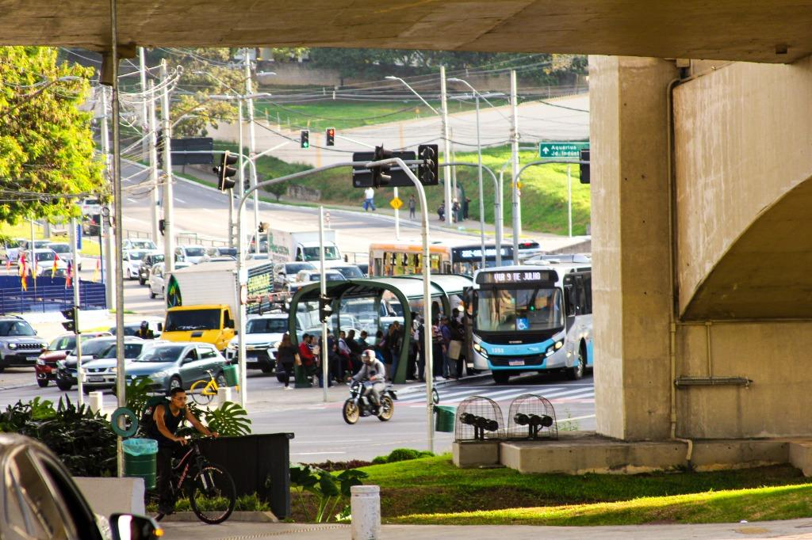
Combinação de modais na rotina urbana joseenseusam ao menos uma forma de micromobilidade considerada pelo Radar: bicicleta própria, bike por aplicativo, patinete alugado ou patinete próprio.
dentro desse grupo também usam ônibus (integração modal).
nota média de qualidade de vida (micromobilidade vs. carro próprio).
Dentro desse grupo, 56,9% também usam ônibus. O dado ajuda a enxergar a micromobilidade menos como substituta de todos os outros modais e mais como parte de uma combinação.
A nota média de qualidade de vida é 3,51 entre usuários de micromobilidade e 3,92 entre usuários de carro próprio. Essa diferença não permite afirmar que um modal melhora ou piora a percepção da cidade. Os grupos podem ter perfis, rendas, regiões e rotinas diferentes.
O que o resultado sugere como agenda é integração. Ciclovia, calçada, ônibus, segurança viária e continuidade de trajeto precisam conversar para que a bicicleta ou o patinete deixem de ser solução isolada.
Micromobilidade funciona melhor quando o resto do caminho também funciona.
Rock nas seleções
Sertanejo
Pop
MPB
Rock aparece em 49,7% das seleções.
Sertanejo, em 47,4%.
Pop, em 44,7%.
MPB, em 40,7%.
Como a pergunta permitia múltiplos gêneros, os percentuais não somam 100%. Em média, cada respondente selecionou 3 gêneros musicais.
Essa mistura é importante para pensar cultura. O público que ouve sertanejo também pode gostar de rock, pop ou MPB. Tentar transformar a cidade numa preferência musical dominante apaga justamente o que a pesquisa mostra: repertório sobreposto.
Para programação cultural, isso abre uma pergunta mais interessante do que “qual gênero vence?”. Como criar calendário com variedade suficiente para que públicos diferentes encontrem algo sem depender sempre do mesmo circuito?
usam Spotify
usam YouTube Music
usam Deezer
No consumo audiovisual e de entretenimento, as plataformas de streaming dominam as telas de São José: a Netflix lidera com 73,6% da preferência dos moradores, seguida por Amazon Prime Video (41,7%), Max (30,2%), Disney+ (30,0%) e Globoplay (29,1%). Na música, o Spotify concentra 48,6% dos ouvintes, acompanhado por YouTube Music (22,6%) e Deezer (9,6%).
Streaming não é apenas um dado de plataforma. Ele ajuda a explicar como repertório circula. O morador descobre artista, restaurante, cidade, estética e tendência pelo celular antes de encontrar qualquer equivalente na rua.
Isso muda a comparação local. O que antes dependia de viagem, televisão ou indicação de alguém agora chega de forma contínua. A cidade é comparada com referências que entram no cotidiano sem pedir licença.
Para cultura e negócios, a consequência é dupla. A competição por atenção aumentou, mas o acesso a repertório também.
São José não disputa apenas com o que está do outro lado da Dutra. Disputa com o que cabe no bolso e na tela.
já têm casa própria (homens / mulheres)
entre 25 e 34 anos moram de aluguel e querem casa própria
nas faixas até R$ 5.600 moram de aluguel e desejam imóvel
Entre mulheres com resposta válida sobre moradia, 43,1% já têm casa própria e 45,0% moram de aluguel, mas querem ter um imóvel.
Entre homens, 54,5% já têm casa própria. Na faixa de 25 a 34 anos, 64,2% selecionaram “moro de aluguel, mas quero uma casa própria”. Entre as duas faixas de renda até R$ 5.600, o percentual é 51,9%.
O levantamento não mede capacidade de financiamento, preço de imóvel ou prazo para compra. Ele mostra posição e desejo. Para parte relevante da amostra, moradia própria segue no horizonte mesmo quando ainda parece distante.
Esse dado conversa com o capítulo qualitativo sobre custo de vida. Quando aluguel, transporte e lazer disputam o mesmo orçamento, projeto de patrimônio e experiência urbana deixam de ser assuntos separados.
Morar em São José também significa decidir quanto da renda fica preso ao endereço.
saem para lazer na cidade ao menos uma vez por mês. Quando perguntamos qual é a maior dificuldade para sair à noite, 33,1% escolheram “é tudo muito caro” e 23,5% disseram “não tem lugar legal para ir”.
gastariam mais na cidade se houvesse opções de que gostam.
Ao mesmo tempo, 69,6% afirmam que gastariam mais com lazer se houvesse opções de que gostam. A combinação desloca a discussão. O hábito de sair existe; o que pesa é a relação entre preço, identificação e variedade percebida.
Nas entrevistas, a pergunta “o que fazer depois do jantar?” apareceu mais de uma vez. Não como ausência completa de bares ou restaurantes, mas como sensação de que, mais tarde, o leque estreita.
OBSERVADO EM CAMPO
Em diferentes saídas, depois das 22h e 23h a procura por opções abertas se concentrou em poucos eixos. Em algumas noites, encontrar o próximo lugar também virou parte do programa.
A noite de São José existe. O ponto é entender para quem ela continua, onde e até que horas.
Na pergunta sobre comprar de produtores locais ou frequentar feiras de artesanato, a amostra se distribui entre consumo ocasional, consumo recorrente e vontade ainda não convertida em hábito.
A diferença entre simpatia e frequência é importante. “Comprar local” pode ser uma ideia valorizada e ainda perder para preço, conveniência, horário, descoberta ou distância.
No campo, a economia de proximidade apareceu de um jeito muito concreto: WhatsApp, indicação e relação direta com quem vende. Produto de limpeza, comida, artesanato e serviço circulam por redes menores que raramente entram nos mapas tradicionais do varejo.
Esse circuito mostra que consumo local não depende apenas de selo, feira ou discurso de pertencimento. Muitas vezes ele começa em confiança e facilidade.
O desafio é fazer o local caber na rotina, não apenas na intenção.
têm animal de estimação em casa.
nota média para a cidade entre tutores de pets.
nota média entre quem não tem animal.
Entre as respostas válidas, 52,8% dizem ter animal de estimação.
Entre tutores, a nota média para São José como cidade boa para quem tem pets é 3,73 em 5. Entre quem não tem animal, a nota é 3,62.
A diferença é pequena e não autoriza dizer que ter pet melhora a avaliação da cidade. O que interessa é a escala do tema. Mais da metade da base vive decisões de consumo, saúde, moradia e lazer atravessadas por um animal.
As entrevistas mostram que essa experiência não é uniforme. Para alguns, pet significa café, parque e passeio. Para outros, a questão central é conseguir pagar consulta, vacina e tratamento.
A cidade pet friendly tem pelo menos duas agendas: experiência e cuidado acessível.
se dizem mais próximos da direita.
, da esquerda.
preferem não responder.
se identificam com o centro.
O Radar apresenta a distribuição como ela foi declarada. Não transforma “centro” ou “prefiro não responder” em personalidade, medo de conflito ou comportamento de consumo.
A política entra aqui como uma das lentes possíveis para entender diferenças internas da cidade. Ela pode ajudar em cruzamentos específicos, mas não funciona como explicação automática para renda, gosto, bairro ou decisão de compra.
Voto, consumo e cultura podem se tocar. Não são a mesma coisa.
dizem que Prefeitura/Governo e empresas/comércio ajudam a cidade a crescer juntos.
apontam empresas e comércio.
escolhem Prefeitura e Governo.
respondem “não sei”.
Somando “empresas e comércio” com “os dois juntos”, 83,2% reconhecem algum papel do setor privado no crescimento local.
O dado não significa rejeição ao poder público. A alternativa mais escolhida é justamente a cooperação. Isso combina com uma cidade em que indústria, tecnologia, comércio, universidade e infraestrutura pública convivem de forma muito visível.
A leitura mais segura é que desenvolvimento, para boa parte da amostra, não cabe num protagonista único.
A cidade cresce na percepção do morador quando diferentes atores conseguem transformar capacidade em experiência concreta.
No Centro, 39,7% dizem que a cidade está melhorando, 35,9% respondem “do mesmo jeito” e 24,4% dizem que está piorando.
No recorte combinado Leste/Sudeste, 35,1% dizem “melhorando”, 45,8% “do mesmo jeito” e 19,1% “piorando”.
As diferenças não são gigantes, mas ajudam a desmontar uma ideia importante: a cidade não é percebida de forma homogênea. Quem vive outros trajetos, depende de outros serviços e usa outros espaços pode construir uma leitura diferente do mesmo período.
Percepção de melhora não mede investimento público, PIB ou indicador de gestão. Mede como o morador sente o rumo da cidade.
O território muda o ponto de observação. E ponto de observação muda a avaliação.
Mapa oficial de São José dos Campos dividido por regiões. Passe o mouse ou clique em uma região para acionar a seta e ver o que a pesquisa identificou em cada uma delas.
Mistura de faixas de renda, trabalho, comércio e lazer. É destino para moradores de outras regiões e também concentra reclamações sobre noite, preço e espaço urbano.
Maior presença de alta renda na amostra regional e forte uso do carro. O lazer se conecta ao eixo Centro/Oeste e à oferta de maior ticket.
Grande peso de adultos de 25 a 34 anos e forte oferta local. Preço, trânsito, cultura e segurança aparecem entre as tensões.
Grande presença das faixas intermediárias de renda e circulação para Centro/Oeste. Transporte e acesso aparecem com força nas falas.
Público mais jovem em parte da amostra regional, com queixas de ônibus, custo e segurança noturna.
Forte conexão com a Zona Sul e percepção crítica de segurança e oferta próxima em parte das respostas.
No conjunto da amostra, Centro/Oeste aparece como principal destino de lazer, seguido pela Zona Sul. Leste, Norte e Sudeste participam do fluxo, mas com menor atração geral.
A concentração não significa que não exista lazer nos demais territórios. Ela mostra que, para parte dos moradores, sair envolve deslocar-se para os eixos onde a oferta é percebida como mais densa.
Esse movimento tem custo. Tempo, trânsito, estacionamento, passagem e segurança na volta podem transformar uma experiência que parecia próxima no mapa em uma escolha mais pesada.
É por isso que lazer e mobilidade aparecem juntos tantas vezes no Radar.
Quando o morador precisa atravessar a cidade para se divertir, o deslocamento vira parte do produto.
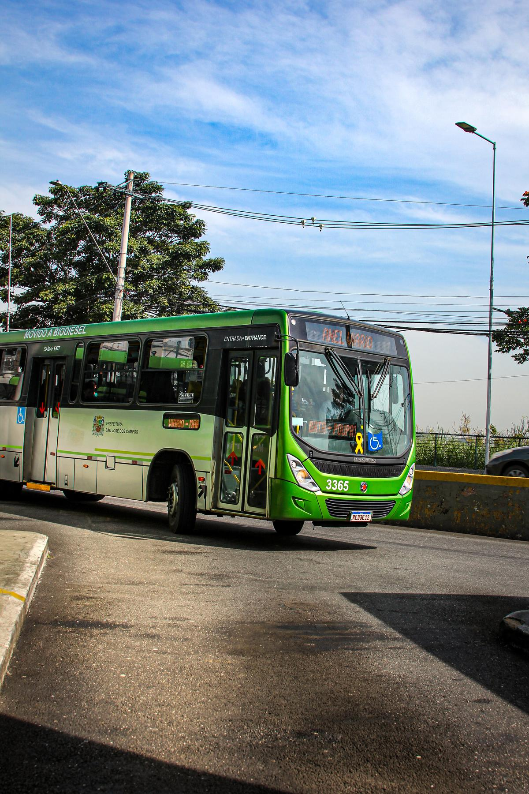
já têm casa própria entre respostas válidas
moram de aluguel, mas querem comprar imóvel
já têm casa própria na amostra pesquisada
Entre mulheres com resposta válida sobre moradia, 43,1% já têm casa própria e 45,0% moram de aluguel, mas querem ter uma. Entre homens, 54,5% já têm casa própria.
Os números mostram diferenças na amostra, mas não explicam sozinhos por que elas existem. Renda, idade, composição familiar e trajetória profissional podem estar por trás de parte do contraste.
No qualitativo, mulheres também falam de segurança, transporte, custo e estrutura familiar como elementos que interferem na vida urbana. Isso ajuda a enxergar moradia e lazer como partes da mesma organização cotidiana.
O Radar não transforma esses dados numa narrativa sobre “a mulher decisora universal”. O interesse está em observar onde experiências de gênero produzem diferenças reais e onde a base ainda é pequena demais para conclusão.
Gênero ajuda a abrir recortes. Não substitui contexto.
A pesquisa perguntou se a pessoa considera necessário estar bem financeiramente antes de começar um relacionamento sério.
A pergunta coloca dinheiro e vida afetiva na mesma frase porque, para parte dos respondentes, autonomia, moradia e carreira entram no imaginário de “estar pronto” para uma relação.
Entre públicos mais jovens, esse tema aparece num momento em que aluguel, primeiro emprego, renda variável e desejo de sair da casa dos pais ainda estão em construção. Para adultos mais velhos, estabilidade pode signific outra coisa.
O questionário também perguntou se redes sociais e aplicativos de namoro mexem com a vida social. A formulação é importante porque não presume que o efeito seja positivo ou negativo.
A vida afetiva também sente o peso das condições materiais, mesmo quando a pesquisa não reduz relacionamento a dinheiro.
Consumo potencialmente deslocado
O Radar construiu uma conta simples para dimensionar a ordem de grandeza do dinheiro que pode acompanhar parte dos moradores quando eles consomem lazer fora da cidade.
O cálculo usa apenas o grupo que respondeu “Sim, sempre” à pergunta sobre ir para outras cidades para passear ou comer fora. A escolha é deliberadamente conservadora: não inclui quem respondeu “às vezes”.
O modelo não mede perda econômica oficial, nem afirma que toda essa renda deixaria de sair da cidade caso surgissem novas opções. Ele serve para colocar escala numa pergunta: quanto consumo pode estar em movimento quando uma parcela recorrente dos moradores escolhe lazer fora?
200.000 trabalhadores formais
× 16,4% que responderam “Sim, sempre”
× R$ 5.732 de referência salarial usada no modelo
× 10,5% de parcela conservadora da renda
= R$ 19.259.520 (R$ 19,26 mi)
A chamada arredondada do Radar é cerca de R$ 19 milhões por mês.
O modelo dos R$ 19 milhões não parte da ideia de que consumir em São Paulo, Taubaté ou Jacareí é um problema. Circular faz parte da vida regional joseense.
em movimento mensal estimado considerando apenas os 16% que afirmam sair “sempre”.
afirmam categoricamente que gastariam mais em São José se houvesse opções alinhadas ao seu gosto.
A conta pergunta outra coisa: qual pode ser a ordem de grandeza do consumo que acompanha o grupo mais recorrente quando ele escolhe lazer fora?
Para manter o cenário estritamente conservador, o Radar usa somente quem respondeu “Sim, sempre”, uma base de 200 mil trabalhadores formais e uma parcela de 10,5% da renda de referência salarial.
O resultado alcança R$ 19,26 milhões por mês: cerca de R$ 19 milhões na leitura arredondada.
Os dois dados não formam uma promessa de captura. Formam uma pergunta de mercado: que parte desse consumo poderia permanecer aqui se oferta, preço, repertório e acesso se encaixassem melhor?
têm orgulho de morar aqui. 66,2% também saem sempre ou às vezes para passear ou comer fora.
usam o lazer local ao menos mensalmente. 60,0% dizem que festas e eventos não combinam com seu jeito.
dizem que gastariam mais diante de opções de lazer de que gostam.
Orgulho e circulação
Gostar da cidade não elimina o desejo de circular. São José concorre com outras cidades sem deixar de ser casa.
Uso e identificação
Frequência mostra que a cidade é usada. Identificação mostra que uso não é sinônimo de representação.
Oferta e intenção de gasto
A intenção não garante faturamento, mas mostra que parte da restrição pode estar menos na disposição de consumir e mais na relação entre oferta e desejo.
As três tensões apontam na mesma direção: São José não precisa ser classificada como “boa” ou “ruim”. A pesquisa mostra uma cidade em que satisfação e cobrança convivem.
É justamente nessa convivência que aparecem as perguntas mais úteis para serviço, cultura, comércio e política urbana.
Os números ajudam a localizar padrões. As entrevistas mostram como esses padrões entram na vida de alguém: quando a conta aperta, quando o ônibus demora, quando o medo muda o caminho de volta, quando um lugar parece caro demais para o que entrega, quando a programação não conversa com quem mora ali.
Foram dez conversas em profundidade com pessoas de idades, profissões e regiões diferentes. Elas não representam estatisticamente São José. Servem para outra coisa: colocar linguagem, contexto e experiência em temas que já apareciam na pesquisa quantitativa e nas respostas abertas.
Ao longo das entrevistas, algumas histórias se repetiram por caminhos diferentes. Preço e variedade apareceram junto com lazer. Segurança apareceu junto com gênero, horário e mobilidade. Cultura apareceu junto com divulgação, território e transporte. Moradia, saúde e vida pet entraram como parte da mesma conta de qualidade de vida.
É nessa camada que a cidade deixa de ser porcentagem e volta a ter voz.
Nota: falas editadas para clareza e concisão, preservando o sentido.
Os dez perfis não foram escolhidos para formar 'tipos de consumidor'. Eles funcionam como pontos de observação. Quando falas de pessoas tão diferentes começam a tocar no mesmo problema, o tema merece atenção.
consultora de negócios • Oeste
Tempo, conforto e repertório entram em quase todas as escolhas. Compara São José com experiências de fora e cobra coerência entre preço, serviço e entrega.
entregador de app • Sul
Conhece a cidade em movimento. Trabalha na rua, atravessa regiões diferentes e percebe trânsito, distância, iluminação e infraestrutura pelo próprio corpo.
motorista de app • Leste
A mobilidade é trabalho e mapa mental. Circula por diferentes bairros e escuta diariamente histórias de passageiros sobre horário, segurança e deslocamento.
trabalhador da indústria • Sudeste
Rotina marcada por trabalho, deslocamento e estabilidade. Olha com desconfiança para modismos e calcula valor antes de gastar.
cabeleireiro • Oeste
Trabalha com público, conversa o dia inteiro e acompanha tendências de comportamento, estética e consumo pelas redes e pelo salão.
garçonete freelancer • Centro
Vive a cidade pela noite, por eventos e por trabalhos temporários. Enxerga de perto a diferença entre quem está se divertindo e quem está trabalhando para a diversão acontecer.
dono de lanchonete • Centro
Comerciante de longa trajetória. Vê movimento, segurança, preço e mudança do Centro pela porta do próprio negócio.
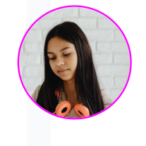
estudante • Leste
Traz repertório jovem, digital e crítico. Fala de cultura, preço, diversidade de programação e acesso a partir de quem depende mais da cidade para encontrar opção.
diarista • Norte
Conhece São José pelos trajetos de trabalho e por casas de diferentes regiões. Saúde, transporte, renda e segurança entram diretamente nas decisões.
professora pública • Norte
Consumidora de cultura e servidora pública. Observa a distância entre a imagem de cidade avançada e o acesso cotidiano a serviços, moradia e programação.
Os assuntos se cruzam na rotina. As falas revelam experiências; os percentuais trazem o contexto da pesquisa quantitativa.
O orgulho de morar aqui convive com a cobrança por uma cidade mais ousada.
Preço, variedade e horários pesam na decisão de sair.
O medo muda trajetos, horários e meios de transporte, sobretudo entre mulheres.
A distância até parques, bares e eventos muda a experiência de cada região.
Participar depende de identificação, divulgação, preço, localização e transporte.
Moradia, alimentação, transporte e lazer pressionam o orçamento.
O tempo de deslocamento afeta trabalho, lazer e acesso à cidade.
Afeto, custo veterinário e infraestrutura se cruzam no cuidado com os animais.
Espera e dificuldade de agenda aparecem também entre quem tem convênio.
Custo de vida e saúde também são leituras das entrevistas; não há percentual fechado para esses dois temas.
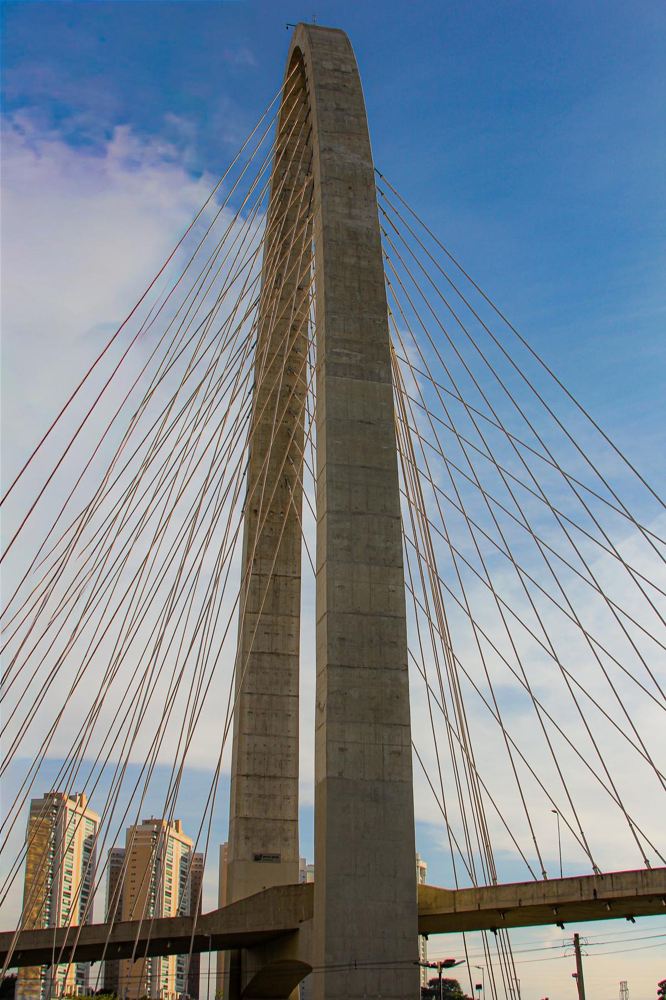
74,2% têm orgulho de morar em São José. 56,6% descrevem a cidade como “um pouco das duas coisas” quando a escolha coloca, de um lado, modernidade e tecnologia e, de outro, tranquilidade com jeito de interior.
São José aparece nas entrevistas como uma cidade desejável para morar e, ao mesmo tempo, difícil de resumir. Tecnologia, indústria, tranquilidade e qualidade de vida convivem com palavras como conservadora, cara, desigual e pouco ousada. O contraste não elimina o orgulho. Ele torna a cobrança mais exigente.
A imagem de polo tecnológico cria uma régua própria. Quando o morador vê Embraer, ITA, INPE, DCTA e Parque Tecnológico como parte da identidade local, ele passa a comparar essa capacidade técnica com outras dimensões da cidade: cultura, vida noturna, mobilidade, espaço público e variedade de experiências. A pergunta aparece de formas diferentes, mas se repete: se São José consegue operar em alta complexidade no trabalho, por que parte da vida urbana ainda parece menor do que essa reputação?
Nas respostas abertas, a crítica ao conservadorismo não deve ser tratada como diagnóstico sobre toda a população. Ela mostra uma percepção presente em parte dos respondentes. Alguns descrevem uma “grande cidade pequena”, outros valorizam justamente a calma, a previsibilidade e a sensação de cidade de interior.
O ponto interessante está nessa convivência. São José não precisa escolher entre tecnologia e tranquilidade. O desafio é entender o que acontece quando a mesma pessoa quer segurança, rotina e, ao mesmo tempo, mais diversidade cultural, mais novidade e mais vida na rua.
A cidade funciona. A discussão começa quando o morador pergunta se ela também poderia surpreender mais.
74,2% têm orgulho de morar em São José. As críticas desta tela aparecem dentro de uma cidade que, ao mesmo tempo, preserva um vínculo forte com seus moradores.
professora pública • Norte
“São José é um microcosmo do Brasil. A gente tem um setor de empresas bastante ativo, uma classe com dinheiro que organiza a cidade e, à margem, uma população periférica que vivencia a cidade através do trabalho. A classe trabalhadora é meio figurante da cidade, mas é quem sustenta muita coisa.”
cabeleireiro • Oeste
“A prefeitura fica mostrando startup, tecnologia, ‘Vale do Paraíba’ pra fora… bonito na vitrine. Mas o trabalhador comum tá virando figurante mesmo. A gente existe pra pagar imposto e servir, mas na hora de viver de verdade, o lugar não é pra gente.”
estudante • Leste
“Aqui, depois do jantar, o que você faz? Dormir? A sensação é que os empresários e a prefeitura não querem que as pessoas tenham vida. Querem que fiquem reféns dentro de casa. Eu me recuso a viver assim, por isso vou a São Paulo fim de semana sim, fim de semana não.”
consultora de negócios • Oeste
“O que é que esse metro quadrado mais caro da cidade tem a oferecer? Aquele shopping lá no Colinas pedindo preços absurdos, e uma porção de gente metida que não tem nada que justifique.”
Nas respostas abertas do questionário (N = 477), a cobrança recai sobre o contraste entre o porte econômico de São José e uma rotina percebida como fechada, elitista ou presa às aparências.
“Uma cidade que parece grande, mas é muito conservadora. Uma grande cidade pequena.”
“Uma cidade bem localizada, ótima pra viver, mas com pessoas cada vez mais arrogantes e individualistas.”
“Cidade conservadora, reacionária e de gente pedante metida a besta.”
“Elitista e conservadora.”
“Meio urbana, meio interiorana. A cidade em si é linda, os joseenses que deixam a desejar: muitos têm o rei na barriga ou não têm consciência de classe.”
“Cidade que vive muito de aparências, foco em se projetar mais do que em implementar melhorias reais.”
“Pacata e conservadora… Cidade em retrocesso, isso sim!”
“Ótima qualidade de vida, porém uma cidade bastante chata e sem opções.”
33,1% apontam “é tudo muito caro” como maior dificuldade para sair à noite. 23,5% dizem que “não tem lugar legal para ir”. 69,6% gastariam mais com lazer na cidade se houvesse opções de que gostam.
Preço e repetição caminham juntos nas conversas. O incômodo não é simplesmente “São José é cara”. Ele aparece quando o morador paga um valor que considera alto e encontra uma experiência parecida com outras que já conhece. A comparação pode ser com outro bairro, com São Paulo ou com referências vistas nas redes. O que pesa é a sensação de que a conta cresceu mais rápido do que a diferença percebida.
A pesquisa quantitativa ajuda a colocar tamanho no assunto. 33,1% citam preço como principal dificuldade para sair à noite. 23,5% dizem que “não tem lugar legal para ir”. São problemas diferentes, mas que se reforçam. Uma cidade pode ter estabelecimentos e ainda deixar parte do público com a impressão de pouca escolha.
Nas entrevistas, o horário entra na conversa com força. Depois do jantar, especialmente mais tarde, alguns moradores descrevem uma busca que termina em poucos formatos conhecidos. No campo, a equipe também encontrou repetição de hamburguerias, pizzarias, gastrobares e conceitos que seguem tendências nacionais. Hamburguerias, pizzarias e gastrobares fazem parte da oferta. O incômodo aparece quando a novidade parece estar mais na decoração do que na experiência.
Famílias acrescentam outra camada. Espaço para criança, banheiro, estacionamento, acústica, segurança e possibilidade de permanecer sem tensão mudam a escolha do lugar. Isso explica por que “mais opções” não significa automaticamente “mais opções para mim”.
A oportunidade começa por uma pergunta mais específica: para quem a oferta atual termina cedo demais, custa demais ou parece igual demais?
33,1% citam preço e 23,5% falta de lugar legal como as principais barreiras individuais para sair à noite. As falas abaixo ajudam a explicar como esses percentuais aparecem na vida real.
estudante • Leste
“Esses dias eu estava com umas amigas, era onze da noite ainda. Andamos três bairros para achar alguma coisa e paramos num lugar que nem queríamos, mas não tinha outra opção.”
consultora de negócios • Oeste
“A gente até tem restaurantes bons, mas o preço é um absurdo. Não faz sentido pagar o mesmo que em Pinheiros aqui em São José. Em São Paulo eu ainda saio do restaurante e vou a uma peça, a um filme. Aqui, depois do jantar, o que você faz?”
cabeleireiro • Oeste
“Fui num lugar em São Paulo que era funilaria de dia e virava balada à noite. Pra São José falta isso: coisa mais espontânea. Uma portinha, boa música, cerveja gelada e preço justo.”
professora pública • Norte
“Tem opções legais, mas pra quem pode pagar mais. Se você não quer desembolsar tanto, o que resta é praça de alimentação de shopping.”
trabalhador da indústria • Sudeste
“É ruim demais e caro demais as coisas, rapaz (...) esses dias saí com a mulher e foi quase 300 conto numa sentada lá na Vila Ema.”
consultora de negócios • Oeste
“Precisamos ter mais festivais legais aqui. O Mr. Moo é um exemplo, mas falta lugar pra sentar direito, falta banheiro limpo — e ainda é caro. O pessoal que pensa em evento aqui não se lembra das mães: parece que tem mais cuidado pra pensar em espaço pet do que em espaço pra mãe.”
Entre os respondentes da pesquisa quantitativa, a frustração combina o valor cobrado em bares e eventos com a falta de vida noturna fora dos corredores comerciais e shoppings.
“Seguro, tranquilo, porém com lugares que cobram muito e oferecem pouco valor em seus produtos.”
“Algumas opções de diversão na cidade ainda são subdesenvolvidas. Quem quer ver coisas legais vai pra SP. Aqui é tudo muito mais ou menos.”
“Em relação às ações sociais e eventos culturais, falta estender para outras regiões, a sensação é que o foco é justamente para quem tem um padrão de vida mais alto.”
“Os eventos gastronômicos... são CARÍSSIMOS!!! Era pra ser promocional!”
“Bares e restaurantes não se preocupam em pôr uma mísera piscina de bolinha.”
“Fora centro comercial, shopping, supermercados e corredores, não há vida nas ruas de São José.”
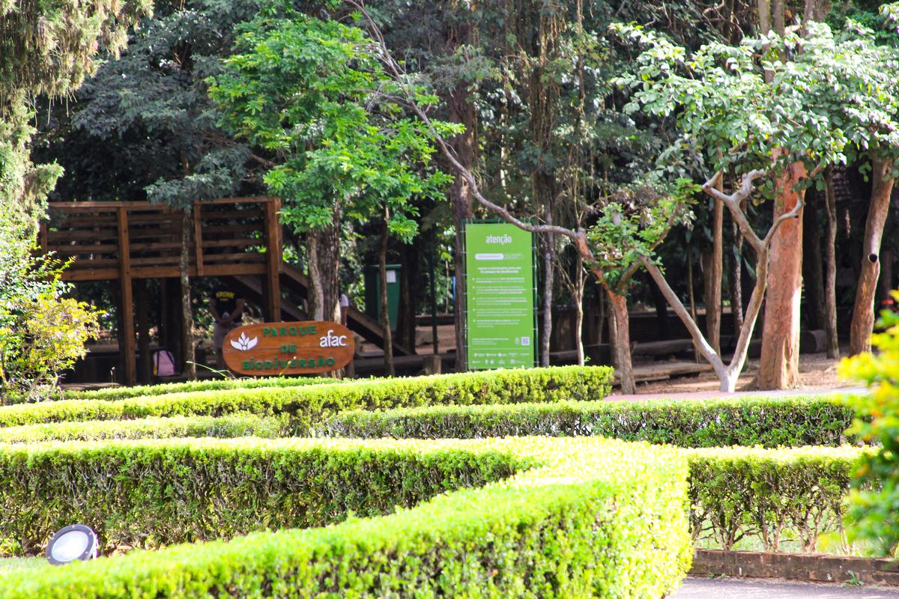
44,9% marcaram “mais segurança” entre as coisas que mais faltam em São José.
As entrevistas não medem criminalidade. Elas mostram outra coisa: como a sensação de insegurança entra na decisão cotidiana. Medo percebido é suficiente para mudar o horário de voltar, a calçada escolhida, o ponto onde alguém espera o carro e até a decisão de sair ou ficar em casa.
Entre mulheres, esse mecanismo aparece com nitidez. Passageiras pedem para o motorista entrar no condomínio ou esperar até o portão abrir. Rosângela relaciona o uso de aplicativo à experiência de assédio no transporte coletivo. Miriam evita andar à noite. São relatos diferentes, mas todos mostram que mobilidade e segurança acabam ocupando o mesmo espaço mental.
Comerciantes também reorganizam a rotina. Roberto descreve dias em que fecha antes porque não considera que o movimento compense o risco. A insegurança, nesse caso, não é apenas um problema do cliente. Ela altera horário de funcionamento, circulação e permanência na rua.
OBSERVADO EM CAMPO
Em incursões noturnas, ruas pouco ocupadas, trechos com iluminação fraca e baixa presença de pedestres mudavam rapidamente a sensação de conforto. A observação não prova nível de crime, mas ajuda a entender por que a rua vazia pesa na decisão de continuar andando.
Segurança percebida e estatística criminal são coisas diferentes. Para entender a vida urbana, as duas importam por motivos distintos. Uma mede ocorrências. A outra ajuda a explicar comportamento.
44,9% pedem mais segurança quando podem marcar livremente o que sentem falta na cidade. As falas abaixo mostram como esse tema reorganiza horário, trajeto e meio de transporte.
motorista de app • Leste
“Eu faço corrida para muitas mulheres e vou falar pra você: elas ficam sempre com medo. Às vezes pedem pra parar o carro dentro do prédio pra não ficar na rua esperando. Isso é todo dia.”
dono de lanchonete • Centro
“Eu fecho a lanchonete meia-noite, mas tem dia que fecho onze e meia porque não compensa o risco. Minha filha trabalha à noite. Quando ela sai do plantão, eu fico esperando a mensagem ‘cheguei’. Se demora, o coração dispara.”
diarista • Norte
“Eu não ando à noite, não. Eu quase não saio na cidade depois que escurece. Minha irmã faz o turno da madrugada num mercadinho e é cada coisa que ela chega contando. Ainda mais pra mulher.”
cabeleireiro • Oeste
“Essas coisas a gente ouve todo dia lá no salão… Essas questões das mulheres não se sentirem seguras. Não dá pra fingir que não vê, não. A violência contra a mulher preocupa muito.”
Nos relatos abertos da pesquisa quantitativa, a insegurança aparece ligada tanto ao medo feminino de circular a pé quanto à degradação percebida em áreas centrais e bairros à noite.
“Uma cidade que eu tenho medo de circular. A gente que é mulher tem que tomar atenção redobrada. De noite me dá medo.”
“Sobre segurança, pra mim que estudo, andar à noite pela cidade dá medo.”
“Pontos turísticos e bares deveriam ter mais segurança.”
“Drogados que estão aos montes pela cidade causando muita insegurança e nada é feito para solucionar o problema.”
“Cidade moderna, porém está ficando precária a segurança em relação a usuários de drogas... inclusive à luz do dia.”
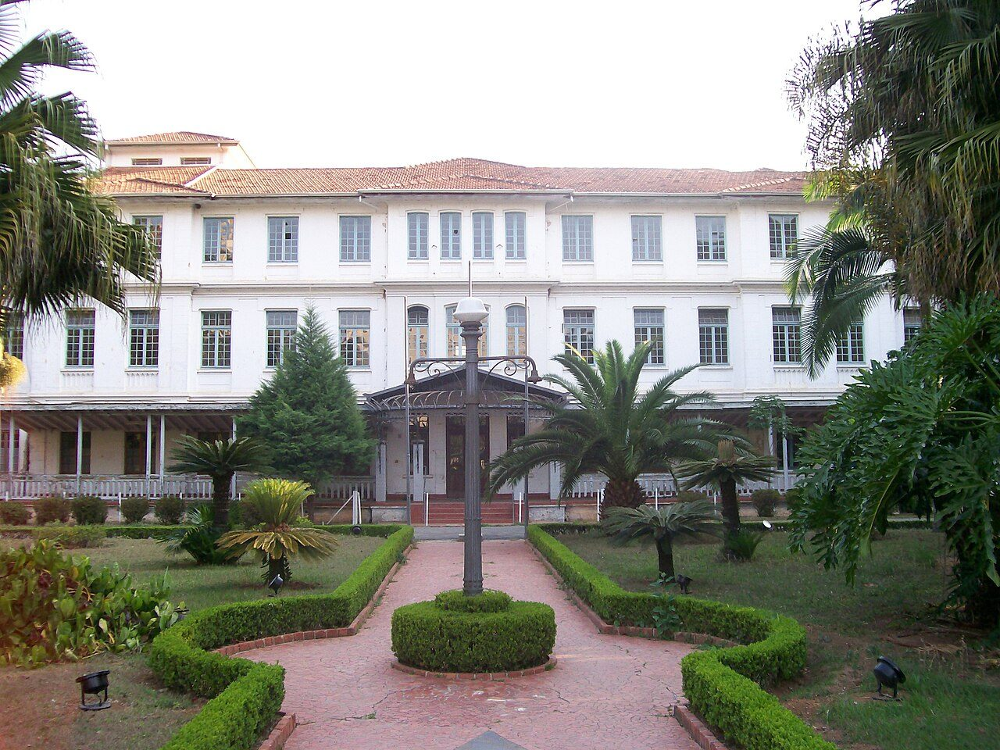
34,0% citam parques e praças mais bem cuidados entre as carências da cidade. 48,4% pedem melhora no ônibus e no trânsito. O fluxo de lazer também mostra concentração de atração no eixo Centro/Oeste.
A cidade não oferece a mesma experiência a quem mora perto de um parque consolidado, a quem depende de ônibus e a quem precisa atravessar São José para encontrar uma opção que considere boa. O mapa do lazer é também um mapa de tempo, custo e acesso.
No quantitativo, Centro/Oeste aparece como principal eixo de destino no conjunto da amostra, enquanto a Zona Sul forma outro polo importante. As entrevistas ajudam a entender o que existe por trás desses deslocamentos. Para alguns moradores, atravessar a cidade faz parte do programa. Para outros, a viagem é o motivo para desistir.
As falas misturam distância, iluminação, manutenção, transporte e sensação de abandono. Um banco quebrado ou uma praça escura parecem detalhes pequenos quando analisados isoladamente. Para uma família que só tem aquele espaço perto de casa, deixam de ser detalhe.
OBSERVADO EM CAMPO
A equipe encontrou diferenças de iluminação, manutenção e ocupação entre espaços de regiões distintas. O contraste não foi uniforme em toda a cidade, mas apareceu repetidamente o suficiente para reforçar uma leitura central do estudo: a qualidade de vida associada a São José não chega pelo mesmo caminho a todos os bairros.
Descentralizar lazer exige mais do que inaugurar equipamento. O espaço precisa ser usado, percebido como seguro e conectado à rotina de quem mora perto.
34,0% citam parques e praças mais bem cuidados e 48,4% pedem melhora no ônibus e no trânsito. As vozes abaixo colocam território e deslocamento dentro desses números.
entregador de app • Sul
“Eu rodo a cidade inteira de moto. No Centro tem parque, lugar iluminado, gente correndo, criança brincando. Agora chega em algumas quebradas depois das seis: escuro, mato alto, banco quebrado. Parece que tem dois São José, um que eles cuidam e outro que esqueceram.”
dono de lanchonete • Centro
“Não adianta colocar tudo no Centro se quem mora longe não tem transporte, não tem segurança, não tem tempo.”
consultora de negócios • Oeste
“Eu mesma levo meu filho no Parque da Cidade, no Santos Dumont, e é tudo bonito, organizado, seguro. Mas tenho funcionária que mora na Zona Leste e demora duas horas pra chegar aqui. Perto da casa dela, o ‘lazer’ é só um campão de terra.”
garçonete freelancer • Centro
“Você passa a noite inteira servindo bebida pra gente rica se divertindo em festa e restaurante fino, e quando o evento acaba eu vou pegar ônibus às duas da manhã e voltar pro meu bairro que não tem uma praça com banco inteiro nem brinquedo sem estar quebrado.”
Nas verbalizações da amostra quantitativa, moradores de diferentes regiões apontam a distância entre a infraestrutura dos bairros nobres e o abandono das áreas periféricas.
“Lazer só pra quem tem dinheiro.”
“Existem locais com pouco acesso e pouco estímulo para as periferias participarem. Os transportes são utilitaristas nesse sentido, caríssimos e voltados somente para levar as pessoas ao trabalho.”
“A cidade precisa priorizar também os bairros periféricos, dando melhores condições de vida aos moradores locais.”
“Queria poder falar coisas muito boas, mas no fundo as periferias aqui ainda sofrem muito. Qualidade de vida é associada ao nível de renda.”
“Cidade rica demais pra ser tão pobre em alguns aspectos. Nosso Parque Tecnológico é só pra quem é amigo de alguém na Prefeitura.”
“A região que eu moro é muito boa, mas as periferias ainda sofrem.”
50,7% dizem que São José tem boas opções de cultura e eventos. Ao mesmo tempo, 60,0% afirmam que as festas e eventos da cidade não combinam com seu jeito, e 43,4% pedem mais festas e eventos culturais.
Preço é uma barreira visível, mas não é a única. Cultura também depende de informação, transporte, horário, localização, repertório e sensação de pertencimento. Uma programação pode existir e continuar invisível para boa parte do público que poderia se interessar por ela.
Nas respostas abertas, divulgação aparece repetidamente. Há gente que descobre um evento depois que acabou. Há quem diga não saber onde procurar. Nas entrevistas, a dificuldade é ainda mais concreta: se a pessoa não entende o que existe, quanto custa, onde acontece e como volta para casa, a decisão de participar morre antes de virar deslocamento.
Outro ponto é a variedade. Algumas falas associam opções gratuitas a uma programação considerada estreita, com pouca presença de linguagens como rap, rock, samba, literatura, arte independente ou eventos de rua. Isso não significa que essas expressões não existam em São José. A crítica é sobre visibilidade, continuidade e capacidade de chegar a públicos diferentes.
OBSERVADO EM CAMPO
A equipe encontrou eventos com divulgação limitada e iniciativas culturais que dependem fortemente de redes específicas para circular. Também percebeu concentração de programação e estrutura em alguns eixos da cidade.
Descentralizar cultura começa antes do palco e termina depois dele: como a pessoa descobre, chega, permanece, se sente incluída e volta para casa.
60,0% dizem que festas e eventos não combinam com seu jeito. 43,4% pedem mais festas e eventos culturais. As falas abaixo ajudam a entender por que existência de programação, descoberta e identificação não são a mesma coisa.
garçonete freelancer • Centro
“Se você não gosta de sertanejo, muitas das opções gratuitas somem. Eu queria ver mais feira de livro, artesanato, banda independente, coisa diferente.”
trabalhador da indústria • Sudeste
“Eu trabalho na indústria, acordo cinco da manhã e volto moído. Quando dá vontade de sair com a família, eu nem sei para onde ir. Não sei o que tem, onde fica, se é de graça ou pago. A cidade também não me ajuda a entender.”
motorista de app • Leste
“Quando tem alguma coisa ‘gratuita’ na cidade, é sempre sertanejo. Não tem um samba, um rock, um rap, uma batalha de rua organizada. E a divulgação então… eu só fico sabendo de evento depois que acabou.”
estudante • Leste
“Quando tem alguma coisa de rap, de batalha de rima, de slam, não é a prefeitura que organiza, é o povo por conta própria, na raça, sem estrutura e sem divulgação.”
diarista • Norte
“Eu trabalho limpando casa a semana inteira, e lá eles vivem falando de show, de peça, de exposição. Tudo é caro: ingresso, transporte, até um pastel na hora. E quando tem coisa gratuita, eu só fico sabendo pela minha patroa.”
Nos comentários espontâneos da pesquisa quantitativa, a queixa cultural divide-se em três frentes: falha na comunicação oficial, pouca diversidade musical gratuita e esquecimento das periferias.
“Faltam muitas atividades e divulgar melhor, principalmente as coisas da Fundação Cultural.”
“Acho muito ruim a divulgação de eventos, principalmente no Parque da Cidade.”
“Basicamente, se você não gosta de sertanejo, todas as suas opções são pagas.”
“Cara, faltam muitas coisas nas áreas periféricas, mas o Aquarius e o Urbanova são lindos.”
“...sempre mais do mesmo, queria ver grandes festivais aqui, gente de outros lugares.”
“SJC só é mais moderna nos bairros mais ricos. Os bairros mais pobres parecem esquecidos.”
“A prefeitura investe nas zonas Sul e Oeste, porém esquece da Zona Leste.”
33,1% citam preço como principal dificuldade para sair à noite. Entre pessoas de 25 a 34 anos, 64,2% moram de aluguel e querem ter casa própria.
Aluguel, bar, restaurante, transporte e serviços aparecem juntos nas falas sobre custo de vida. O incômodo com o custo aparece na comparação entre a conta e o que existe ao redor: metragem, localização, mobilidade, variedade de lazer, serviço e qualidade percebida.
Aquarius, Vila Ema e outras áreas valorizadas entram nas conversas como símbolos dessa comparação. Para alguns entrevistados, São José cobra valores que lembram uma capital sem oferecer a mesma densidade de programação ou de serviços. Essa é uma percepção, não um índice de preços produzido pelo Radar. Ainda assim, ela interfere diretamente em comportamento.
No lazer, o dado quantitativo é claro: 33,1% apontam preço como a maior dificuldade para sair à noite. O levantamento não mede “inflação local”, mas mostra onde o custo já interfere na decisão de uso da cidade.
Moradia acrescenta uma pressão mais estrutural. Quando aluguel e financiamento ocupam uma parcela maior da renda, sobra menos espaço para consumo discricionário. E quando morar perto dos eixos mais valorizados fica difícil, o custo se desloca para transporte e tempo.
A percepção de cidade cara, portanto, não cabe numa única etiqueta. Ela nasce da soma entre quanto custa morar, circular e aproveitar São José e o que cada pessoa sente que recebe em troca.
O preço aparece no quantitativo de formas diferentes: 33,1% apontam custo como principal barreira da noite, enquanto os dados de moradia mostram forte desejo de casa própria entre adultos jovens. As falas abaixo mostram como essas contas se acumulam no orçamento.
cabeleireiro • Oeste
“Você vai num barzinho simples, pede uma cerveja e um lanche, e já é o preço de uma conta de luz. Aluguel então, nem se fala. Eu pago um apartamento pequeno numa área nem tão nobre e é praticamente metade do que ganho.”
garçonete freelancer • Centro
“O rico paga sessenta reais num prato que não enche ninguém e nem pisca. Eu saio do serviço uma da manhã, vou comprar leite e pão e não sobra dinheiro pra nada. Tudo é caro nessa porra de cidade.”
professora pública • Norte
“Eu acordo cedo, dou aula, corrijo prova, pago minhas contas… e no fim do mês olho o preço de um apartamento pra alugar perto da escola e dou risada. Mil e quinhentos reais numa kitnet que não cabe minha cama.”
consultora de negócios • Oeste
“Compara o aluguel de um bairro nobre de São Paulo com o Aquarius. O que é que esse metro quadrado mais caro da cidade tem a oferecer que justifique preços tão absurdos?”
Nas respostas abertas da pesquisa quantitativa, a especulação imobiliária e o descompasso entre salários locais e custo de moradia lideram as críticas espontâneas.
“Custo de vida de capital com opções de interior.”
“Uma cidade cara pelo que oferece. Especulação imobiliária imaginária completamente sem nexo.”
“Custo de vida alto e aluguéis muito caros, difícil achar casa para morar.”
“Valor do aluguel do imóvel está absurdamente caro... proprietários perderam a noção, pedindo R$ 1 mil em dois cômodos e nem fica em áreas valorizadas.”
“Daqui a pouco vamos estar pagando 10 mil reais pra morar na saída da cidade. As kitnets mais baratas são muito longe, Uber é mais caro, não tem nada.”
“Cara de viver, principalmente transporte e aluguel.”
“Uma cidade completa, porém muito caro de se viver.”
“Uma cidade ‘sabor tecnológica’... mas o piso salarial é horrível e há pouco benefício fora das grandes empresas.”
64,6% usam carro próprio, 56,8% usam aplicativos de transporte e 46,3% usam ônibus. Quando a pergunta é o que mais falta na cidade, 48,4% marcam melhorar ônibus e trânsito.
Ônibus, carro, aplicativo, moto, bicicleta e Linha Verde se sobrepõem na rotina. A escolha raramente depende de um único fator. Preço, tempo, conforto, segurança e destino mudam a combinação, e a mesma pessoa pode usar modais diferentes ao longo da semana.
As entrevistas trazem uma cidade vista de dentro do trânsito. Motoristas e entregadores falam de congestionamento, comportamento viário e tempo perdido entre corridas. Trabalhadores com transporte fretado descrevem a diferença entre ter e não ter uma alternativa ao carro ou ao ônibus comum.
Para mulheres, mobilidade encontra segurança de forma direta. Rosângela relata assédio no transporte coletivo e explica por que dividir um carro de aplicativo com colegas pode valer a diferença de preço. Nesse caso, o preço do modal divide espaço com outra pergunta muito concreta: em qual deles eu me sinto mais protegida?
A pesquisa quantitativa reforça a centralidade do tema: 48,4% marcaram melhorar ônibus e trânsito entre as coisas que mais faltam em São José. Ao mesmo tempo, 21,4% usam alguma forma de micromobilidade, e 56,9% desse grupo também usa ônibus. A cidade já é multimodal na prática, ainda que a experiência entre esses modais nem sempre pareça integrada.
Mobilidade não termina quando a pessoa chega. Ela define a distância que parece aceitável, o horário que parece seguro e o preço que uma saída realmente custa.
Quase metade da amostra, 48,4%, pede melhora no ônibus e no trânsito. A combinação de carro, aplicativo e ônibus mostra que mobilidade em São José é feita de sobreposição de modais, não de uma única escolha.
trabalhador da indústria • Sudeste
“Eu tenho carro, mas ultimamente prefiro o ônibus da empresa justamente pra não passar raiva. De carro, o tempo que você perde, o combustível que gasta, a paciência que acaba... melhor deixar na garagem. Mas nem todo mundo tem essa opção.”
garçonete freelancer • Centro
“Eu e duas colegas rachamos um Uber. Além de às vezes sair mais barato, eu não preciso ficar passando raiva com homem nojento no ônibus. Já sofri assédio. Minha paz pesa na escolha.”
motorista de app • Leste
“Na hora do rush é um inferno: você fica parado quarenta minutos pra andar dois quilômetros no Arco da Inovação. O motorista de aplicativo, que tá na rua o dia inteiro, perde corrida, perde tempo e perde dinheiro.”
entregador de app • Sul
“Eu tô de moto todo dia, desviando de barbeiro o tempo inteiro. Motorista não dá seta, não olha retrovisor, fecha você na faixa. Tenho que ter olho na nuca pra trabalhar na rua.”
Na pesquisa quantitativa, as manifestações espontâneas cobram um transporte coletivo menos utilitarista, melhores terminais e malha cicloviária fora do centro expandido.
“Transportes utilitaristas, caríssimos e voltados somente para levar as pessoas ao trabalho.”
“O transporte em SJC só aumenta a passagem e não está em condições... os motoristas são grossos.”
“Uma sugestão de mudança é ter mais ciclovias em bairros periféricos. É uma bagunça o trânsito.”
“SJC só é moderna nos bairros mais ricos. O terminal é antigo e as filas se cruzam.”
“Passagem de ônibus cara para quem utiliza os ônibus sem ar-condicionado e lotados.”
“Sobre a melhoria das ciclovias nas áreas periféricas.”
“Eu queria falar das linhas de ônibus que deixam muito a desejar nos horários de bairro.”
52,8% das respostas válidas dizem ter animal de estimação. Entre tutores, a nota média para São José como cidade boa para quem tem pets é 3,73 em 5.
Mais da metade da base válida tem animal de estimação. Nas entrevistas, o pet aparece como companhia, membro da família e também como uma despesa difícil de absorver quando surge uma emergência. A relação afetiva é forte; a capacidade de pagar por cuidado varia muito.
O tema aparece em duas frentes. A primeira é saúde: consulta, exame, vacina e tratamento podem pesar no orçamento a ponto de adiar atendimento ou exigir empréstimo. A segunda é espaço urbano: parque, passeio, bebedouro, área cercada e possibilidade de frequentar lugares com o animal.
Nas respostas abertas, moradores também falam de abandono, fiscalização e convivência com animais de maior porte. Não existe uma única demanda pet. Há quem procure experiência e conveniência, quem precise de atendimento acessível e quem esteja preocupado com regras básicas de cuidado e segurança.
OBSERVADO EM CAMPO
A equipe percebeu diferenças territoriais na presença de estrutura e ambientes adequados para pets. Áreas mais organizadas viram referência positiva, enquanto moradores de outras regiões relatam falta de opção perto de casa.
O mercado pet pode crescer em ticket e sofisticação, mas as entrevistas lembram que existe outra ponta igualmente importante: cuidado básico que caiba no bolso.
Mais da metade da base válida, 52,8%, vive a rotina com um pet. As falas abaixo mostram a distância entre a ideia de cidade pet friendly e a capacidade real de pagar cuidado veterinário ou encontrar estrutura perto de casa.
garçonete freelancer • Centro
“A Mel é minha companheira. Quando ela fica doente, eu não tenho pra onde levar. Veterinário particular é caro pra caralho. Consulta, exame, remédio... tudo pesa.”
estudante • Leste
“Eu vejo gente indo em café pet, parque com espaço separado, bebedouro. Aqui perto de mim não tem nada disso. Quando minha gata ficou doente, tive que pedir dinheiro emprestado.”
diarista • Norte
“O Billy pegamos da rua, ele é tão bonzinho. Mas morro de dó porque não tenho condição de levar no veterinário sempre que precisa. Ano passado apareceu com ferida na pata e limpei com soro caseiro porque não tinha dinheiro pro particular.”
trabalhador da indústria • Sudeste
“Eu gosto muito de cachorro, mas hoje em dia não tenho coragem de pegar um porque é caro demais. Ração tá um absurdo, vacina nem se fala, e se o bicho fica doente, veterinário é uma fortuna.”
Nas respostas abertas da quantitativa, o debate pet vai além do consumo: moradores cobram espaços públicos nos bairros, resgate de animais abandonados e respeito às regras de segurança.
“Em bairros mais nobres os pets vivem melhor, mas nas periferias não tem lugar pra poder fazer coisas com o cachorro.”
“A cidade precisa cuidar mais dos animais; vemos muito abandono e maus-tratos, principalmente nas regiões mais periféricas.”
“O problema sobre os animais é que alguns tutores não prezam pela segurança do todo quando saem com eles na rua (principalmente cachorros).”
“A cidade tem boas leis quanto aos pets, porém falta fiscalização, principalmente nas regras de passeio sobre algumas raças maiores.”
“Preocupação com o aumento de animais abandonados nas ruas dos bairros.”
“Falta suporte público para recolhimento e manejo de animais que atacam pessoas na rua.”
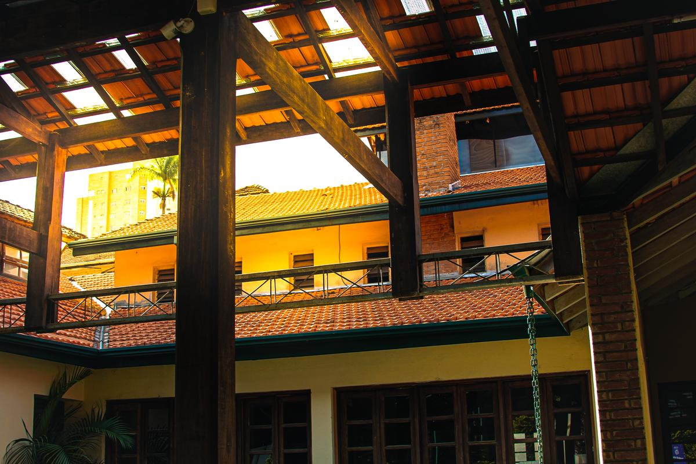
O questionário quantitativo não teve uma pergunta fechada específica sobre saúde. O tema apareceu nas respostas abertas e voltou com força nas entrevistas.
Saúde não foi um eixo quantitativo central do Radar, mas voltou com frequência suficiente nas respostas abertas e entrevistas para merecer um capítulo próprio. O tema surgiu quando as pessoas falavam de qualidade de vida, envelhecimento, orçamento e da diferença entre a imagem de cidade estruturada e a experiência concreta com serviços.
Os relatos citam demora para especialistas, espera em pronto atendimento, consultas rápidas e dificuldade de agenda até entre pessoas com convênio. Isso é importante porque desloca a frustração de uma oposição simples entre público e privado. Em várias falas, o problema é a sensação de saturação.
O Radar não usa essas entrevistas para medir desempenho do sistema de saúde, nem para comparar indicadores clínicos. Elas não substituem dados oficiais. O que mostram é uma experiência de espera que se tornou presente o suficiente para entrar na forma como moradores avaliam a cidade.
A saúde também expõe um ponto que atravessa todo o estudo: infraestrutura só vira qualidade de vida quando o acesso funciona na rotina. Ter serviço disponível e conseguir usá-lo no tempo necessário são coisas diferentes.
Por isso, este tema entra menos como diagnóstico setorial e mais como sinal de percepção urbana: quando até quem paga plano sente dificuldade de acesso, a sensação de segurança associada à cidade perde força.
Não existe percentual fechado de saúde no questionário original. Esta tela permanece ancorada nas entrevistas em profundidade e nas respostas abertas da pesquisa quantitativa.
Base auditada no campo aberto final: 15 menções diretas a saúde (8,3%) entre 180 manifestações espontâneas (N total = 477).
cabeleireiro • Oeste
“Eu tenho plano de saúde, pago caro todo mês e mesmo assim está difícil. Dermatologista, três meses. Ortopedista, mais de dois. Quando chega a consulta, parece que o médico está correndo para atender mais trinta.”
diarista • Norte
“Conheço gente esperando consulta há dois, três anos. Enquanto isso a doença vai piorando. Quem tem plano também reclama, mas quem depende só do SUS sente mais.”
entregador de app • Sul
“Ano passado minha mãe ficou com dor no peito, levei na UPA e ficamos seis horas esperando. Especialista então, pra quem depende da rede pública, parece impossível de conseguir rápido.”
dono de lanchonete • Centro
“Eu tenho convênio local e antigamente você marcava consulta pra semana seguinte. Agora você fica quarenta minutos na linha e a vaga é pra daqui a dois, três meses. Ultrassom leva um mês.”
Sem nenhuma pergunta induzida sobre o tema, 8,3% dos moradores que preencheram o campo final usaram o espaço livre para denunciar filas de espera, falta de pediatria e saturação nos planos e no SUS.
“Falar da saúde da cidade, que está difícil também. Até pra quem tem plano de saúde.”
“Pessoas esperando há anos por atendimento médico especializado, um absurdo.”
“A saúde infantil já era precária... falta um bom hospital infantil particular/convênio.”
“Saúde pública na cidade de SJC está em decadência.”
“A questão da saúde tá pegando muito nos últimos anos, muita gente reclamando.”
“A cidade vem se modernizando... mas a saúde decaiu demais...”
“Sim, a saúde está abandonada.”
“A cidade é toda tecnológica, porém o básico [saúde] não está sendo feito.”
Padrões de comportamento que atravessam renda, idade e território
Os quatro movimentos nasceram depois que a pesquisa quantitativa, as entrevistas e a observação de campo foram colocadas lado a lado. Eles não são segmentos estatísticos, não têm tamanho de mercado calculado e não substituem recortes de idade, renda ou região.
A função deles é outra. Eles organizam maneiras recorrentes de interpretar São José, decidir o que vale a pena, reagir à novidade, comparar a cidade com outros lugares e escolher onde gastar tempo e dinheiro.
Uma mesma pessoa pode reconhecer mais de um movimento em si. O modelo trabalha com predominância, não com caixas fechadas. Isso ajuda a explicar por que duas pessoas com renda parecida podem querer coisas completamente diferentes da cidade.
Os quatro movimentos são uma lente autoral do Radar. Eles não encerram a pesquisa. Eles começam uma conversa sobre cultura local com mais nuance do que “classe A, B ou C” consegue oferecer.
O Radar não começou a pesquisa procurando quatro movimentos. Eles foram construídos depois de observar recorrências em três fontes: o quantitativo, as entrevistas em profundidade e a Invasão de Cenários.
No quantitativo, apareceram tensões entre orgulho e saída para outras cidades, uso local e baixa identificação com parte da programação, intenção de gasto e sensação de falta de opção. Nas entrevistas, essas tensões ganharam linguagem. No campo, algumas delas apareceram em comportamento, circulação, horários, formatos de comércio e maneiras de ocupar a cidade.
O trabalho foi procurar relações que se repetiam mesmo quando idade, renda ou região mudavam. Uma pessoa de renda alta e um jovem da periferia, por exemplo, podem compartilhar a mesma curiosidade por referências externas. Um comerciante e um profissional de aplicativo podem ter em comum uma forma muito prática de aprender com o mercado.
Os movimentos são sínteses culturais, não diagnósticos sobre cada morador. A utilidade está em fazer perguntas melhores: o que essa pessoa valoriza, que comparação ela faz e qual tipo de cidade ela espera encontrar?
Valoriza estabilidade, rotina, previsibilidade e o que já provou funcionar. A insatisfação pode aparecer mais como abandono silencioso do que como confronto aberto.

Olha para São José a partir da potência que a cidade aprendeu a anunciar. Orgulho tecnológico e frustração urbana caminham juntos porque a expectativa é alta.
Compara a cidade com referências que chegam de fora, pela viagem, pelas redes, pela música, pela gastronomia, pelo trabalho e pela cultura. Não é um movimento restrito à alta renda.
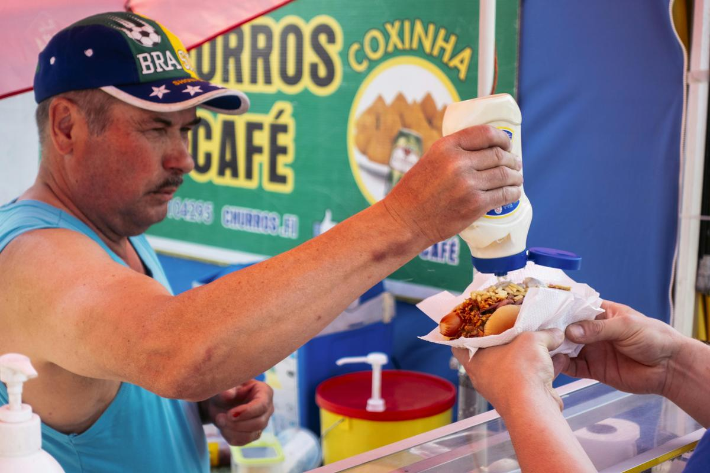
Aprende no balcão, na rua, no aplicativo e no caixa. Negócio e renda se organizam com adaptação rápida, proximidade e pouca paciência para ferramenta que não resolve problema concreto.
Os quatro convivem. Em alguns momentos se aproximam, em outros entram em conflito. É dessa convivência que parte da dinâmica de consumo de São José fica mais legível.
Quando “tá tudo bem” não quer dizer que está tudo bem
São José é descrita muitas vezes como organizada, tranquila, segura e boa para viver. Esses atributos têm valor real e ajudam a explicar por que a estabilidade aparece com tanta força no imaginário local.
A Geografia da Inércia começa quando preservar o que já funciona pesa mais do que experimentar algo novo. Essa preferência não deve ser confundida com preguiça ou falta de ambição. Ela fala de risco: se a rotina entrega o necessário, a mudança precisa provar que vale a troca.
Esse movimento ajuda a entender por que reclamações podem demorar a aparecer e por que hábitos se mantêm mesmo quando a satisfação não é completa. O silêncio não significa aprovação automática.
A cidade pode estar confortável e ainda assim carregar incômodos que só aparecem quando a conversa aprofunda.
Em muitas conversas, a primeira resposta vinha em tom de normalidade. São José é boa, organizada, tranquila, confortável. Bastavam mais alguns minutos para surgirem trânsito, preço, cultura, noite, segurança, saúde ou desigualdade territorial.
A distância entre a primeira frase e o que vinha depois chamou atenção. Não porque as pessoas estivessem “mentindo” quando diziam gostar da cidade, mas porque satisfação e incômodo conviviam sem necessariamente produzir ruptura.
A Geografia da Inércia nasce dessa convivência. Para parte dos moradores, a rotina tem valor suficiente para que a reclamação não vire ação imediatamente. A pessoa pode continuar frequentando o mesmo shopping, o mesmo bar, a mesma feira ou o mesmo prestador porque conhece o caminho, o preço, o estacionamento e o que esperar.
Isso cria um tipo de estabilidade muito importante para negócios locais. Também cria uma armadilha: quem olha apenas para a ausência de reclamação pode confundir hábito com entusiasmo.
Nem toda permanência é fidelidade. Às vezes é só a alternativa mais simples.
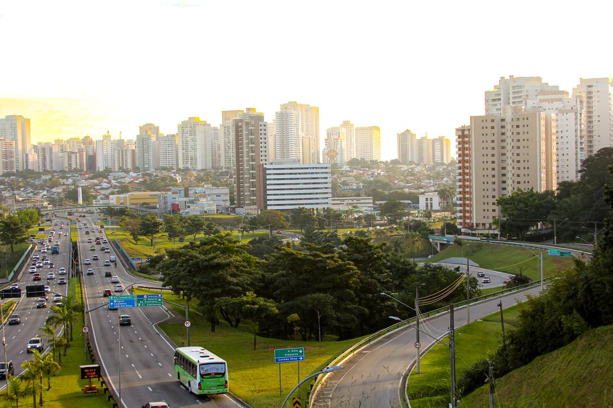
A cidade cresceu ao redor de indústria, engenharia, grandes instituições e uma cultura de trabalho muito orientada para resultado. Essa trajetória ajuda a formar um imaginário em que ordem, previsibilidade, competência técnica e estabilidade têm prestígio.
É uma leitura cultural do Radar, não uma explicação causal fechada. Ainda assim, nas entrevistas, a valorização do que é seguro e conhecido aparece em diferentes contextos: emprego estável, bairro familiar, serviço que “não dá dor de cabeça”, comércio de confiança e preferência por soluções que resolvam sem exigir muita experimentação.
Esse pragmatismo também aparece no consumo. Novidade pode atrair atenção, mas precisa mostrar utilidade rapidamente. Um lugar pode ser bonito, um produto pode estar na moda e uma marca pode falar de inovação. Se a experiência parecer complicada, cara demais ou pouco confiável, a rotina volta a vencer.
A força desse movimento está justamente aí. São José não rejeita mudança. Ela tende a cobrar prova antes de mudar de hábito.
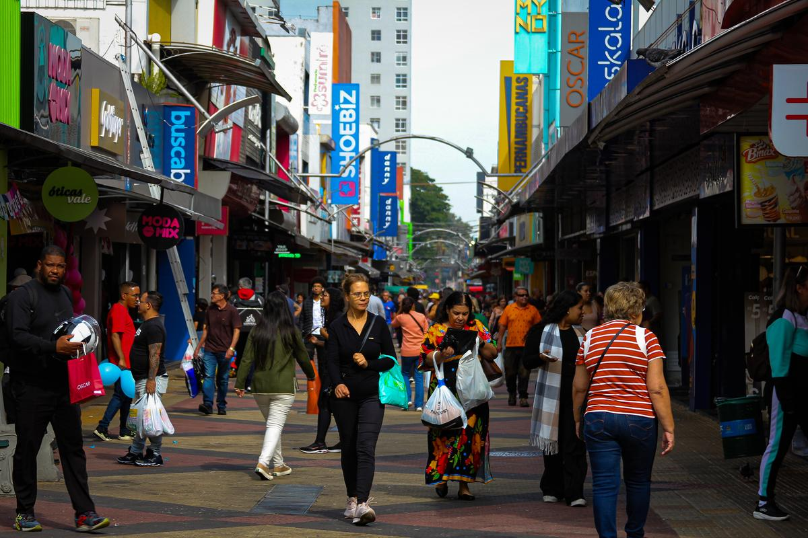
A Invasão de Cenários registrou placas de “aluga-se”, trocas de operação e negócios que chegam e desaparecem em diferentes pontos da cidade. Esses sinais, sozinhos, não explicam por que uma empresa fechou. O que torna a observação interessante é sua proximidade com falas sobre repetição, preço e baixa identificação.
Se a cultura de confronto é baixa em determinadas relações de consumo, a insatisfação pode aparecer como ausência. A pessoa deixa de ir, troca de endereço, reduz a frequência ou passa a comprar fora sem necessariamente escrever avaliação, reclamar com o gerente ou avisar que não volta.
Isso muda a forma de escutar o mercado. Pesquisa de satisfação feita apenas com quem continua frequentando pode perder justamente quem já saiu. Queda de recorrência, menor permanência, perda de indicação e mudança de rota podem falar antes da reclamação.
Para negócios, vale acompanhar uma pergunta que quase nunca chega em forma de reclamação: quem parou de vir e por quê?
Localização indicativa por setor. Não representa rotas individuais, intensidade de visitas ou frequência por movimento.
Shoppings, atacarejos, feiras de bairro, parques de rotina e comércio tradicional ajudam a visualizar esse movimento porque reúnem atributos valorizados por quem prefere previsibilidade: estacionamento, familiaridade, serviço conhecido, sensação de segurança e pouca surpresa.
Vale Sul, CenterVale e Shopping Jardim Oriente condensam várias necessidades no mesmo lugar. O Calçadão, a Rua 15 e feiras de bairro representam outra forma de estabilidade: relação recorrente, proximidade e hábito territorial.
Isso não significa que esses lugares “pertençam” ao movimento. São referências que ajudam a enxergar uma lógica de comportamento.
Quando a Geografia da Inércia domina a decisão, a novidade precisa entrar sem destruir confiança. A melhor inovação pode ser aquela que parece nova na experiência e familiar na facilidade de usar.
A cidade do avião criou uma expectativa difícil de desligar
São José aprendeu a se apresentar como lugar de tecnologia, engenharia, ciência e futuro. Essa narrativa tem lastro concreto e produz orgulho.
Mas promessa também cria cobrança. Quanto mais a cidade é associada a capacidade técnica, mais estranho parece quando cultura, experiência urbana, mobilidade ou comunicação não acompanham essa imagem.
A Cidade Prometida reúne moradores que olham para São José e enxergam potencial antes de enxergar falta. A frustração existe justamente porque a expectativa é grande.
O movimento carrega menos saudade de um passado perfeito e mais a sensação de que a cidade ainda pode entregar uma versão maior de si mesma.
Embraer, ITA, INPE, DCTA, Parque Tecnológico e a história aeroespacial formam uma narrativa rara no Brasil. Mesmo quem não tem relação direta com essas instituições reconhece que elas ajudaram a construir a imagem da cidade.
Nas entrevistas, essa imagem aparece menos como reverência institucional e mais como régua de comparação. Se São José consegue fazer avião, satélite, pesquisa e engenharia avançada, por que determinados serviços urbanos, eventos e experiências parecem tão comuns?
A Cidade Prometida olha para o presente através dessa expectativa. Ela pode admirar a cidade e criticá-la na mesma frase. Pode defender São José diante de quem vem de fora e, minutos depois, reclamar que a cidade “parou”.
Esse movimento não vive de saudade. Vive de um futuro que parece ter sido prometido muitas vezes e ainda não se materializou do mesmo jeito em todas as dimensões da vida urbana.
A crítica é uma forma de expectativa. Quem não esperasse nada cobraria menos.
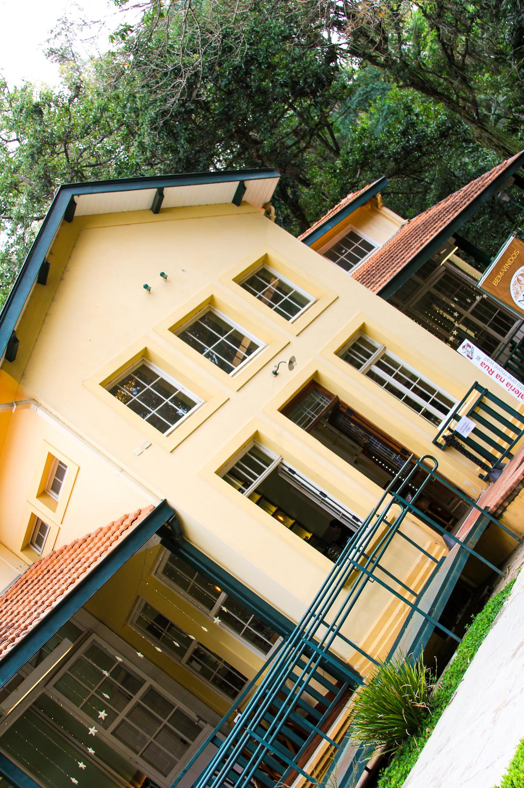
A força econômica e tecnológica da cidade é clara dentro de setores específicos. Fora deles, a identidade pública é menos nítida. São José é polo aeronáutico, industrial e de pesquisa, mas essa história nem sempre se transforma em experiência urbana, turismo, calendário cultural ou narrativa reconhecível.
Esse descompasso aparece nas entrevistas como falta de projeção. Não porque o morador espere que São José vire uma capital turística, mas porque existe uma sensação de subaproveitamento. Uma cidade com tanta história técnica poderia contar melhor essa história para quem mora aqui e para quem vem de fora.
Um slogan mais forte resolveria pouco. A identidade precisa aparecer em lugares concretos: museus que conversem com a rua, eventos, roteiros, espaços de visitação, educação, gastronomia, design, memória de bairro e comunicação.
Quando a narrativa vive apenas dentro da empresa ou da instituição, ela não vira patrimônio coletivo.
O gap de visibilidade começa quando a potência existe, mas a experiência pública não consegue contá-la.
Quem espera pouco de uma cidade se decepciona menos. Na Cidade Prometida, acontece o contrário.
O orgulho por morar num polo tecnológico aumenta a cobrança por eventos melhores, espaços mais interessantes, serviços bem executados e uma imagem pública à altura da capacidade econômica. São Paulo é uma referência frequente, mas a comparação mais dura acontece com a própria promessa que São José construiu sobre si.
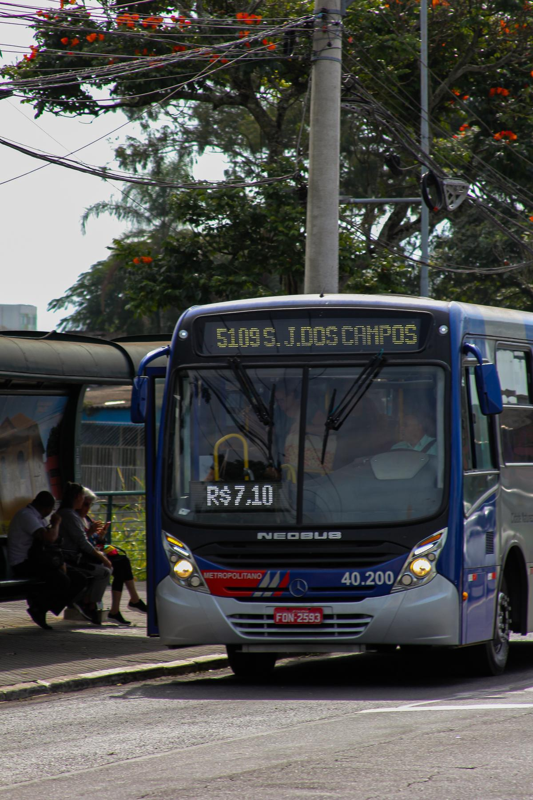
Esse morador olha para um parque mal cuidado, uma programação repetitiva ou um serviço que falha e não enxerga só um problema pontual. Enxerga uma incoerência: “como uma cidade que sabe fazer tanta coisa complexa ainda entrega isso assim?”.
É daí que nasce o frustrado ambicioso. A crítica vem acompanhada da sensação de que existe estrutura, talento e dinheiro suficientes para fazer melhor.
A frase implícita desse movimento é simples: a gente poderia estar fazendo muito mais.
Localização indicativa por setor. Não representa rotas individuais, intensidade de visitas ou frequência por movimento.
Parque Tecnológico, DCTA, ITA, INPE, Embraer, universidades, centros de pesquisa e a própria paisagem marcada pela aviação ajudam a visualizar a base concreta desse movimento.
Mas a Cidade Prometida também aparece fora desses espaços. Surge na conversa sobre aeroporto, mobilidade, cultura, qualificação profissional, eventos e reputação externa. Sempre que alguém compara a capacidade técnica de São José com uma entrega urbana considerada pequena, o movimento reaparece.
DCTA, ITA e INPE incluem áreas de acesso controlado; são referências institucionais, não destinos livres de passeio.
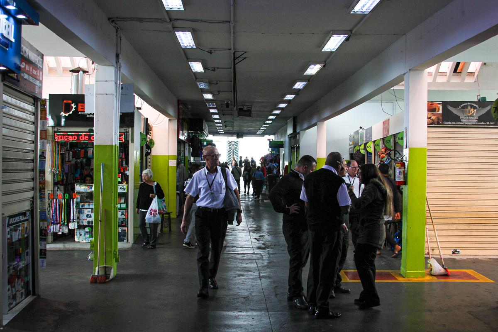
Esses lugares não são “território exclusivo” de um perfil. Funcionam como símbolos de uma expectativa coletiva.
A pergunta que fica é menos “como comunicar melhor a inovação?” e mais “como fazer a inovação participar da experiência de viver São José?”
A referência de parte dos moradores já não termina na Dutra
TikTok, Instagram, streaming, viagem, trabalho remoto, gastronomia, música e cultura colocaram referências distantes dentro da rotina. O morador não precisa sair de São José para comparar São José com o mundo.
A Tribo Global reúne pessoas que fazem essa comparação com frequência. Não é um movimento restrito à alta renda. Ele apareceu também entre jovens da periferia que acompanham tendências, descobrem lugares pelas redes e constroem repertório antes de ter poder de compra para consumir tudo que admiram.
O ponto comum está na régua de comparação, não no patrimônio.
Quando a referência é global, “bom para São José” deixa de ser argumento suficiente.
Uma estudante da Zona Leste e uma executiva do Oeste podem ter orçamentos completamente diferentes e, ainda assim, conhecer o mesmo restaurante de São Paulo, acompanhar a mesma estética no Instagram ou ouvir o mesmo artista no streaming.
Essa circulação de referência muda o consumo local. A pessoa entra num café e compara iluminação, cardápio, atendimento, música e preço com experiências que viu em outras cidades ou na tela. Mesmo quando não viajou, ela construiu repertório suficiente para formar expectativa.
Por isso a Tribo Global não deve ser confundida com “público premium”. Há gente com renda alta nesse movimento, mas há também jovens, profissionais criativos, estudantes e trabalhadores que consomem tendência primeiro como informação e depois, quando podem, como produto.
A cidade concorre não apenas com estabelecimentos próximos. Concorre com imaginários que chegam o dia inteiro pelo celular.
O concorrente da experiência local já não mora necessariamente na cidade.
A Tribo Global rejeita a ideia de que cobrar caro transforma um negócio em experiência premium. Nas falas, “sofisticação” aparece ligada a coerência: atendimento, acústica, cardápio, arquitetura, iluminação, identidade, história do produto e sensação de descoberta.
Isso ajuda a explicar por que parte dos moradores busca São Paulo mesmo quando existem opções de alto ticket em São José. A comparação envolve dinheiro, mas também repertório e densidade de experiência.
Um restaurante pode servir boa comida e ainda parecer genérico. Um café simples pode ter um ponto de vista claro e virar referência. Um evento pode custar caro e frustrar porque fila, banheiro, som e organização não acompanham o preço.
Esse movimento não pede luxo em todo lugar. Pede intenção.
Uma experiência cara e genérica pode perder para uma experiência simples, mas autoral.
A pesquisa mostra que 66,2% saem sempre ou às vezes para outras cidades para passear ou comer fora. Essa circulação tem vários motivos e não deve ser reduzida a “fuga para São Paulo”.
Quem sai volta com referência nova. Um restaurante, uma exposição, uma rua ocupada, um evento gratuito, um serviço melhor executado ou uma experiência inesperada podem alterar o que a pessoa passa a esperar de São José.
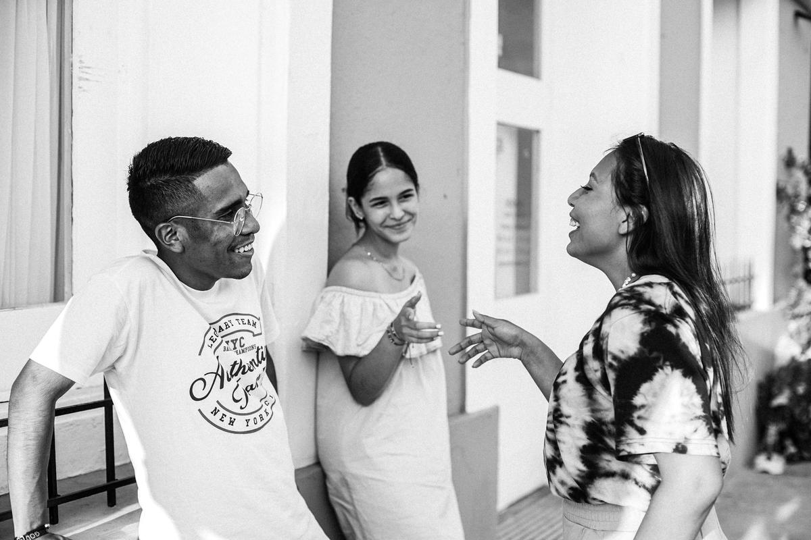
O efeito não termina no viajante. Referências circulam por conversa, rede social, indicação e comportamento. Uma pessoa experimenta algo fora, comenta com amigos, publica, compara e passa a cobrar outra coisa localmente.
Isso vale também para quem nunca faz a viagem. O repertório digital permite participar da comparação à distância.
Repertório é uma forma de influência. Ele muda a pergunta de “tem ou não tem?” para “como isso é feito aqui?”.
Localização indicativa por setor. Não representa rotas individuais, intensidade de visitas ou frequência por movimento.
Vila Ema, Vila Adyana, Aquarius, Parque Vicentina Aranha, cafés de especialidade, restaurantes autorais, estúdios de bem-estar e espaços com programação cultural ajudam a visualizar a busca por curadoria, estética e experiência.
Esses lugares funcionam como exemplos, não como fronteiras. A Tribo Global aparece em qualquer região quando referências externas entram na decisão local.
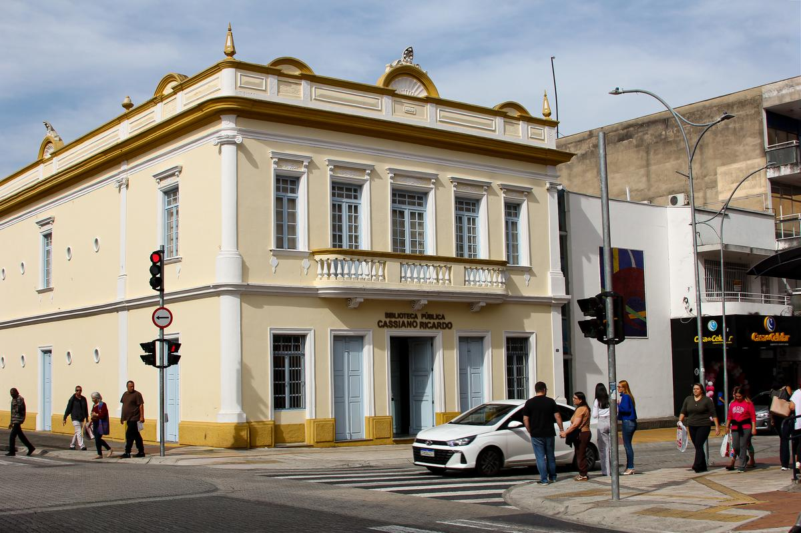
É por isso que reduzir o movimento a bairros de maior renda seria um erro. O comportamento pode aparecer num jovem da Leste acompanhando moda, música e gastronomia internacional pelo celular, tanto quanto num profissional que viaja e compara serviços.
A Tribo Global não pede uma cópia de São Paulo.
Ela quer encontrar em São José algo que valha a comparação justamente porque tem identidade própria.
O negócio que aprende no balcão
A economia de São José não acontece apenas nas empresas que aparecem nas apresentações institucionais. Ela gira também em salão, oficina, lanchonete, loja, moto, aplicativo, consultório, prestação de serviço, venda por WhatsApp e renda complementar.
O Empreendedorismo Intuitivo reúne pessoas que aprendem fazendo. Testam preço, mudam cardápio, trocam fornecedor, anunciam no Instagram, aceitam Pix, entregam de moto e ajustam a operação com base no que o cliente responde no dia seguinte.
Esse movimento inclui dono de empresa, mas também autônomo, PJ, motorista de aplicativo, entregador e quem mistura trabalho formal com bicos.
A escola principal é o mercado real. O desafio é adicionar ferramenta sem tirar agilidade.
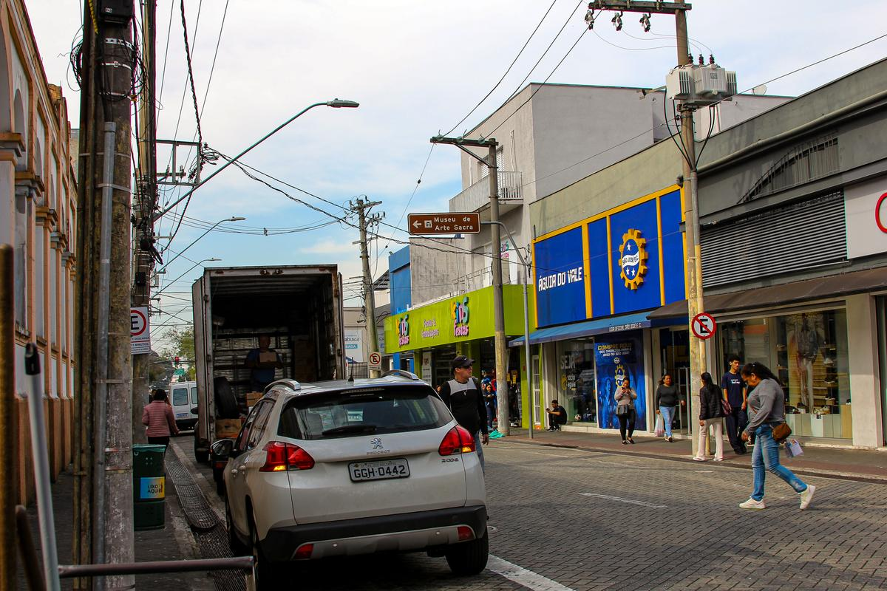
Nem todo negócio nasce de um plano de expansão. Às vezes nasce porque faltou emprego, porque uma atividade paralela começou a render, porque o bairro tinha uma carência ou porque a pessoa percebeu que sabia fazer algo que alguém pagaria para resolver.
É por isso que oportunidade e necessidade podem existir juntas. O mesmo motorista que busca renda imediata pode sonhar com um negócio próprio. A pessoa que vende comida por encomenda pode começar para completar o mês e depois descobrir que existe demanda recorrente.
Essa origem prática influencia a gestão. Ferramentas que demoram demais para mostrar resultado perdem espaço. O empreendedor quer saber se aquilo ajuda a vender, cobrar, organizar, reduzir custo ou economizar tempo.
O risco aparece quando toda energia vai para o corre do dia e sobra pouco espaço para olhar margem, posicionamento, concorrência e diferenciação.
A habilidade central é adaptação. O próximo passo é transformar adaptação em aprendizado acumulado.
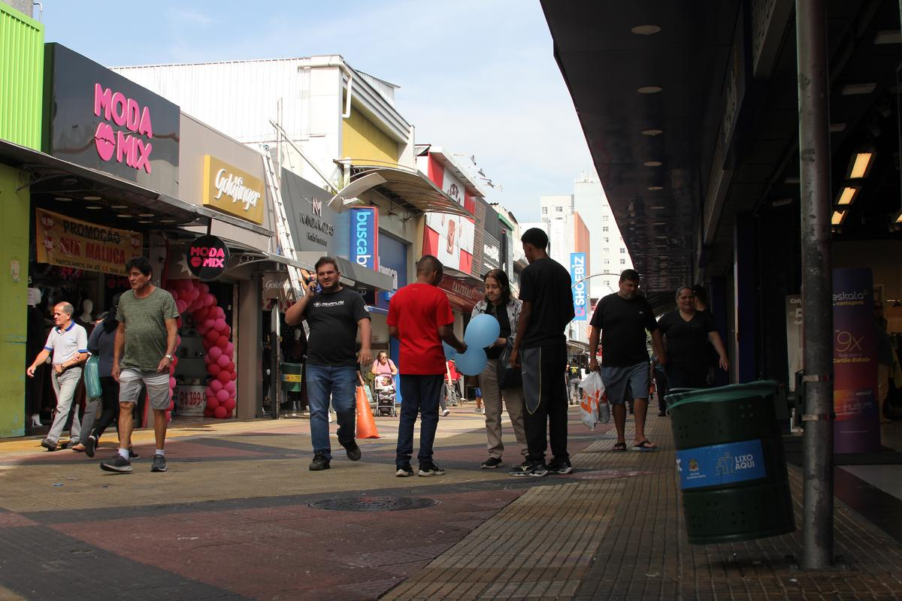
A Invasão de Cenários encontrou venda por WhatsApp, indicação direta e confiança pessoal em comida, limpeza, artesanato e serviços. Nesse ambiente, o dono está perto do cliente. A resposta chega no caixa, na conversa e na recompra.
O bairro funciona como laboratório porque o feedback é rápido. Um produto que não gira ocupa espaço. Um preço fora da realidade vira comentário. Um atendimento bom vira indicação. O empreendedor aprende sem chamar isso de pesquisa.
Tecnologia entra quando facilita. Catálogo no WhatsApp, Pix, entrega de moto, Google, Instagram e marketplace podem conviver com uma relação comercial extremamente pessoal.
A força está justamente na combinação. Digital para ganhar velocidade. Proximidade para ganhar confiança.
O digital acelera o contato. A confiança ainda tem rosto.
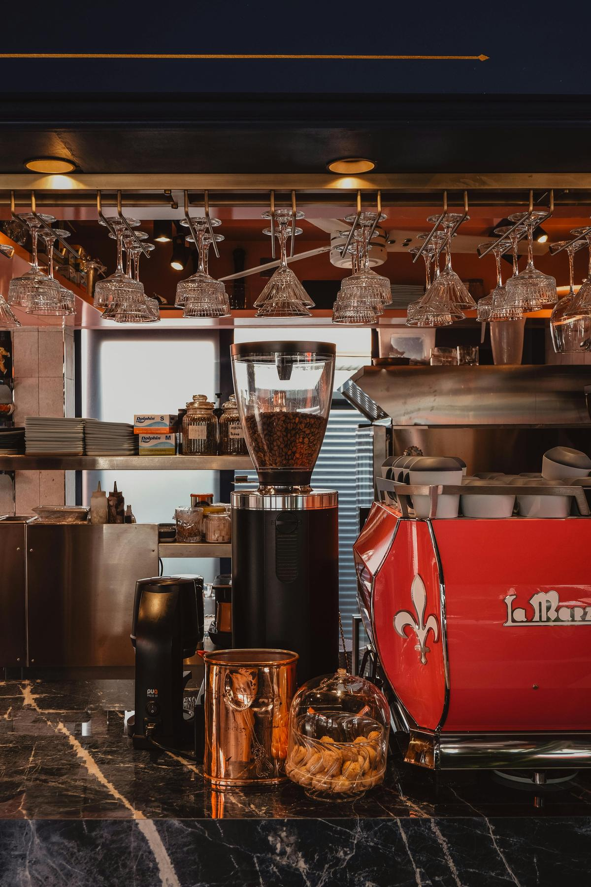
O Radar observou uma ansiedade recorrente de reproduzir formatos que estão em alta nacionalmente. Uma categoria ganha atenção, novos negócios aparecem e, pouco tempo depois, várias operações disputam o mesmo público com ofertas muito parecidas.
A expressão “síndrome do imitador” funciona aqui como uma provocação sobre diferenciação, não como diagnóstico sobre todo empreendedor joseense. Copiar um formato reduz a incerteza inicial, mas também reduz o espaço para construir motivo próprio de escolha.
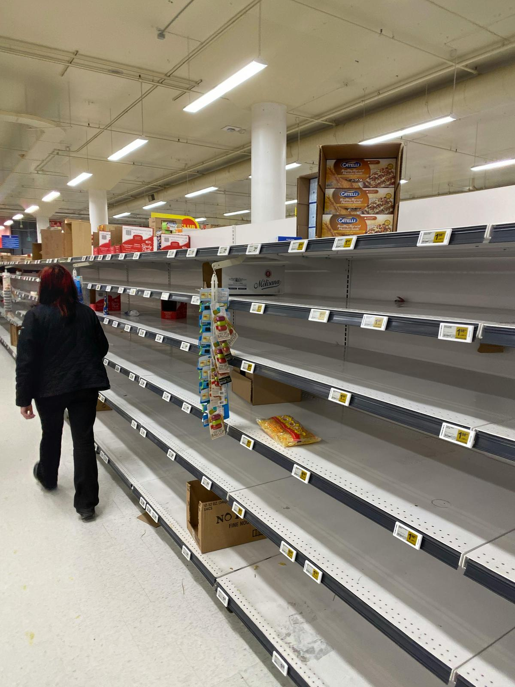
Quando todo mundo entra na mesma onda, preço, ponto e promoção começam a decidir mais do que identidade. Parte dos negócios não consegue sustentar a novidade quando o hype diminui.
O movimento intuitivo tem velocidade para testar. Essa mesma velocidade pode ser usada de outro jeito: observar uma carência real e criar uma solução local antes de copiar um modelo pronto.
Copiar o formato é fácil. Construir motivo para voltar é outra história.
Localização indicativa por setor. Não representa rotas individuais, intensidade de visitas ou frequência por movimento.
Centro, Shopping Centro, Camelódromo, Rua Rubião Júnior, Rua 15, Bacabal, Andrômeda, Pedro Friggi, Vila Industrial, Santana, Novo Horizonte e outros corredores comerciais ajudam a visualizar uma São José que gira fora dos grandes polos corporativos.
É onde a economia aparece em salão, oficina, lanchonete, autopeça, mercado, entrega, prestação de serviço, venda direta e pequenos negócios que combinam família, trabalho e bairro.
Os lugares não definem o movimento. Eles mostram sua capilaridade.
Para esse público, profissionalização precisa chegar em formato útil: finanças simples, precificação, presença digital, estoque, atendimento, negociação e ferramenta que caiba na rotina.
Gestão boa é a que melhora o caixa sem matar a agilidade.
A Geografia da Inércia lembra o valor da confiança e da previsibilidade. A Cidade Prometida carrega a expectativa de que São José pode fazer mais. A Tribo Global amplia a comparação. O Empreendedorismo Intuitivo mostra a capacidade de agir com os recursos disponíveis.
Essas forças podem entrar em conflito. O que é ousadia para um grupo pode parecer risco desnecessário para outro. O que é sofisticação para alguém pode soar como preço inflado para quem mede valor de forma mais prática.
Também podem se complementar. Um negócio de bairro pode usar repertório global sem perder proximidade. Uma iniciativa cultural pode respeitar a rotina local e ainda trazer novidade. A narrativa tecnológica pode ganhar vida quando encontra empreendedorismo, gastronomia, design e espaço público.
O valor dos movimentos está menos em classificar pessoas e mais em mostrar que São José responde melhor quando a solução entende qual tensão está tentando resolver.
O Radar termina olhando para frente. Não com previsão fechada, ranking de setor ou promessa de “próxima grande oportunidade”, mas com sinais que aparecem quando números, falas e rua são colocados na mesma mesa.
Alguns desses sinais falam de mercado. Outros falam de vida urbana. Quase todos atravessam os dois. Tempo livre, identidade, proximidade, trabalho, gastronomia e narrativa são assuntos diferentes, mas se encontram na mesma pergunta: o que faria mais gente escolher São José com convicção, e não apenas por conveniência?
Os próximos blocos não funcionam como recomendação de investimento. Funcionam como agenda de investigação. Eles apontam onde vale olhar com mais atenção antes de decidir.
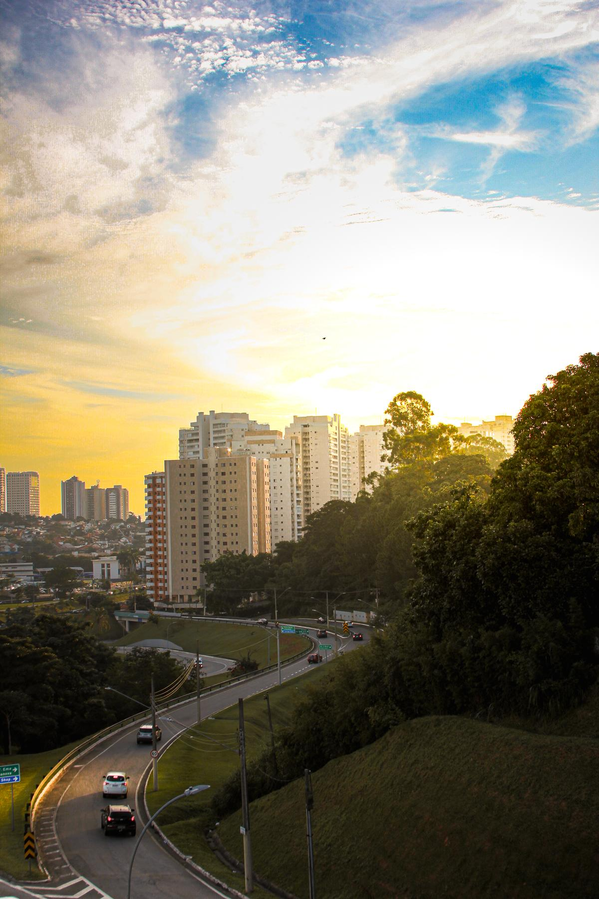
Sete sinais para pensar São José em 2026 e 2027
01. Tempo livre virou critério de valor
Quando preço, trânsito e distância entram na conta, sair de casa precisa parecer melhor do que ficar. Atendimento, conforto, programação e permanência pesam porque o morador compara a experiência com todo o esforço necessário para chegar até ela.
02. Identidade pesa mais do que quantidade
Mais oferta não resolve quando tudo parece parecido. Em vários temas do Radar, a pergunta deixa de ser “tem opção?” e passa a ser “tem algo que combine comigo?”.
03. Repertório externo acelera a comparação
São Paulo, outras cidades e referências digitais entram na régua local. Isso afeta preço, estética, serviço, música, gastronomia e expectativa de novidade.
04. O bairro voltou a ser importante
Trânsito, rotina e conveniência favorecem soluções próximas de casa. Qualidade local pode ganhar de centralidade quando economiza tempo e reduz deslocamento.
05. Trabalho e renda estão menos presos a uma única forma
PJ, autônomo, aplicativo, renda complementar e trabalho remoto criam horários, demandas e trajetórias diferentes do emprego convencional.
06. Gastronomia pode organizar cenas urbanas
Comida é uma das poucas categorias que conecta gasto, encontro, território, noite, cultura e turismo. Quando vários negócios diferentes se fortalecem juntos, um endereço pode virar destino.
07. São José precisa contar melhor o que já é
A potência tecnológica existe. O espaço está em transformar essa história em experiência pública, memória, calendário, visitação e identidade reconhecível.
Nenhum desses sinais vale sozinho. A força aparece quando eles se combinam no mesmo território.
dizem que gastariam mais com lazer diante de opções de que gostam. O dado fala de intenção, não de faturamento garantido. Ainda assim, ele mostra que parte da restrição não é falta absoluta de vontade de gastar.
Uma noite começa antes do primeiro pedido. Tem o tempo para chegar, o trânsito, o estacionamento, o aplicativo, a expectativa e a comparação com ficar em casa. Quando tudo isso entra na conta, preço deixa de ser apenas o valor do cardápio.
É por isso que conforto, atendimento, programação, permanência e sensação de descoberta aparecem juntos. Um lugar pode ser correto e ainda não parecer digno de repetição. O desafio está na coerência da soma. Nem toda experiência precisa virar espetáculo.
Para negócios, a pergunta útil é menos “quanto cabe no ticket?” e mais “o que faz a pessoa sair de casa e querer repetir essa noite?”
A cidade reúne aeroespacial, indústria, pesquisa, universidade, parques, bairros consolidados e uma posição regional importante. Esses ativos são conhecidos, mas não aparecem com a mesma força na vida cotidiana.
História existe de sobra; o problema está na forma dispersa como ela aparece. Uma parte fica dentro das empresas, outra nos museus, outra na memória de quem viveu fases anteriores da cidade. O morador pode trabalhar perto de uma das maiores histórias tecnológicas do país sem encontrar muitos pontos de contato com ela no fim de semana.
Cidades como Toulouse ajudam a pensar esse desafio porque transformam aviação em memória, turismo, visitação e identidade pública. Joinville faz algo semelhante com a dança. A comparação serve para levantar uma pergunta, não para importar um modelo.
São José não precisa vestir uma fantasia de “cidade futurista”. Precisa descobrir como ciência, indústria, espaço, trabalho e vida urbana podem formar uma narrativa que o morador reconheça fora do crachá.
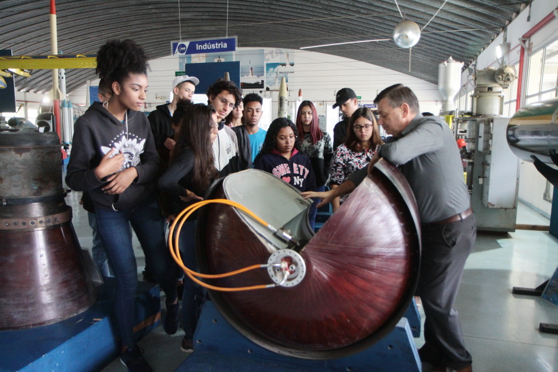
Toda novidade precisa de gente disposta a correr um pouco mais de risco. No Radar, a Tribo Global ajuda a visualizar esse grupo: pessoas que descobrem cedo restaurantes, cafés, eventos, música, tecnologia e estéticas que ainda não viraram padrão local.
Esse público não deve ser tratado como “elite que dita tendência”. Repertório e renda não são a mesma coisa. Um estudante pode conhecer um conceito antes de ter dinheiro para consumir com frequência; um profissional de renda alta pode preferir o que já conhece.
O papel dos primeiros adotantes é outro. Eles ajudam uma proposta nova a ganhar linguagem, prova social e circulação. Se a experiência funciona, recomendam. Se é só cenário para foto, também percebem rápido.
Para um negócio, conquistar curiosidade é uma etapa. Construir recorrência é outra.
O hype traz a primeira visita. Só entrega consistente traz a segunda.
Trânsito transforma distância em custo mesmo quando o combustível não entra na conta. Uma compra simples, um jantar ou uma atividade infantil podem parecer menos atraentes quando exigem atravessar a cidade.
No campo, comércio de bairro apareceu usando WhatsApp, indicação e relação pessoal para vender comida, produto, artesanato e serviço. É uma lógica direta: menos deslocamento, mais confiança e resolução rápida.
A tecnologia não precisa competir com esse vínculo. Pode organizar pedido, pagamento, entrega, agenda e recorrência. O valor continua sendo local: conhecer o cliente, estar perto e reduzir atrito.
Para regiões fora dos eixos mais densos de lazer, existe uma oportunidade específica: oferta boa o suficiente para que “não precisar ir longe” seja parte do benefício, e não uma concessão.
O trabalho deixou de caber apenas na imagem do emprego das oito às cinco. PJ, autônomo, prestador de serviço, motorista de app, empreendedor, trabalhador remoto e quem combina renda principal com bicos aparecem no Radar com rotinas mais fragmentadas.
Essa mudança altera horário de consumo e necessidade de infraestrutura. Café vira lugar de reunião. Internet estável deixa de ser conveniência. Sala por hora pode resolver o que um escritório fixo não resolve. Serviço que fecha cedo perde quem trabalha em outra lógica.
São José já tem capital humano e empresas de tecnologia. A pergunta é como a cidade cotidiana acompanha formas de trabalho que usam mais o bairro, o celular e espaços intermediários.
Oportunidades como coworkings menores, salas por hora, café com permanência e serviços para PJ fazem sentido como hipóteses. Precisam ser validadas bairro a bairro.
O trabalho ficou mais móvel. Parte da infraestrutura ainda pensa como se todo mundo tivesse mesa fixa.
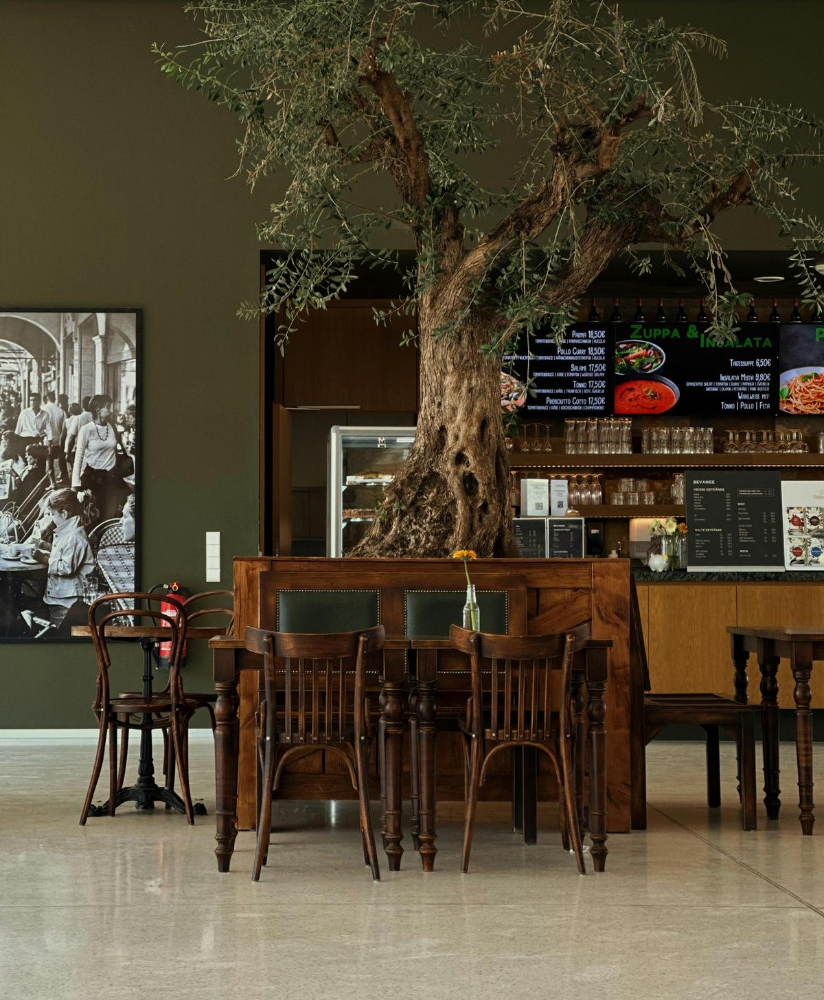
Gastronomia aparece repetidamente no Radar porque reúne várias camadas ao mesmo tempo: gasto, encontro, noite, identidade, família, repertório, produção local e comparação com outras cidades.
A oportunidade não está em “abrir mais restaurante”. As entrevistas mostram justamente o cansaço com repetição. O espaço está em propostas com motivo claro para existir: cozinha autoral, preço coerente, atendimento, programação, estrutura familiar, experiência noturna ou ligação real com produtores e histórias locais.
Quando vários negócios diferentes se fortalecem no mesmo território, a rua ganha densidade. A pessoa deixa de ir apenas a um estabelecimento e passa a escolher um pedaço da cidade.
Vila Ema, Vila Adyana, Aquarius, Centro e polos da Zona Sul já oferecem pistas dessa lógica. O próximo passo não precisa ser uma “rota gastronômica oficial”. Pode começar com colaboração, calendário, circulação e mais diferença entre as propostas.
Gastronomia funciona como âncora quando ajuda a criar cena, não quando multiplica o mesmo formato.
São José tem histórias fortes: aviação, espaço, indústria, pesquisa, migração, trabalho, parques, bairros e uma posição singular entre São Paulo, Mantiqueira e Litoral Norte.
O problema é que essas histórias aparecem fragmentadas. Uma está no museu, outra na empresa, outra no arquivo de família, outra numa praça e outra no relato de quem chegou para trabalhar décadas atrás.
Uma narrativa urbana ganha força quando memória, programação, espaço público, turismo, gastronomia e comunicação começam a se reconhecer mutuamente. Quando isso acontece, a identidade deixa de depender apenas de campanhas.
O Radar encontrou moradores que gostam de São José e ainda assim têm dificuldade de dizer o que a torna culturalmente única. Essa lacuna não apaga a identidade. Ela mostra que parte dela continua pouco visível.
Quanto mais clara a cidade fica para quem vive nela, mais fácil fica para quem vem de fora entender por que deveria prestar atenção.
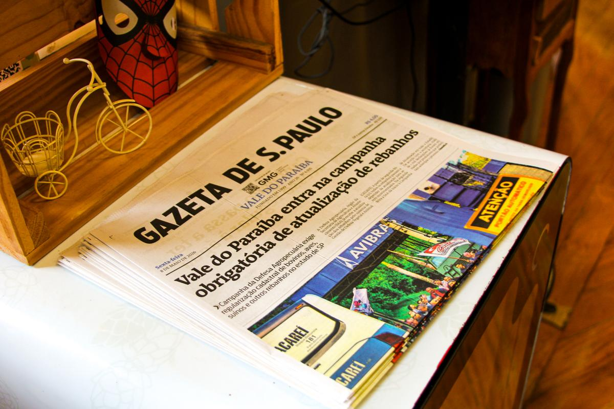
Os sinais abaixo não são ranking de rentabilidade e não substituem estudo de mercado. Eles organizam temas que apareceram com intensidades diferentes na pesquisa, nas entrevistas, no campo e em dados secundários.
Base ampla de tutores, carência veterinária e espaços públicos.
Intenção de gasto, fuga para SP e crítica à repetição.
43,4% cobram festas culturais; 60,0% não se sentem representados.
Forte consumo no Instagram com carência de curadoria qualificada.
Desejo de compra existe, mas taxa de juros e preço desafiam o jovem.
Público autônomo e PJ exige utilidade imediata e retorno tangível.
Dependência direta de localização, ponto e fidelização de nicho.
Demanda latente, mas restrições regulatórias e escala financeira pesam.
Mais do mesmo já satura a cidade e gera alta taxa de rotação.
Descoberta digital é alta, mas post pago não converte sem proposta real.
Guerra de margem fragiliza e é destruída por grandes redes.
Síndrome do imitador esgota a novidade antes do ponto de equilíbrio.
A pesquisa mostra diferenças de circulação, percepção e acesso entre regiões. Isso não autoriza transformar cada zona em caricatura. O playbook abaixo funciona como ponto de partida para validação local, não como mapa fechado de comportamento.
Centro / Oeste
Oferta mais densa e comparação maior. Vale investigar experiência noturna, gastronomia autoral, cultura, conveniência premium e propostas que consigam sustentar diferenciação além do endereço.
Sul
Grande base residencial e circulação local. Família, alimentação, lazer acessível, serviços e soluções que reduzam deslocamento podem ganhar valor quando combinam conveniência e qualidade.
Leste
Vida de bairro forte e deslocamento para outros eixos aparecem nas falas. Cultura descentralizada, gastronomia de proximidade e serviços locais merecem investigação com preço compatível à região.
Norte
Transporte, noite e acesso aparecem de forma recorrente. Conveniência, serviços essenciais, lazer local e programação comunitária podem ter espaço quando não dependem do carro para funcionar.
Sudeste
Conexão com Zona Sul e percepção crítica de oferta próxima. Alimentação, lazer de bairro, serviços e espaços de permanência merecem teste.
O endereço sozinho não cria mercado. Antes de investir, é preciso olhar concorrência, fluxo, ticket, mobilidade, horário e o comportamento específico daquele pedaço da cidade.
A maioria da amostra tem orgulho de morar aqui. A cidade é usada para lazer. Ao mesmo tempo, sair para outros municípios faz parte da rotina de uma parcela relevante dos moradores. As duas coisas convivem sem contradição simples.
Preço pesa, mas não explica tudo. Identificação com eventos é limitada para parte importante da base. Transporte, segurança, cultura e manutenção aparecem entre as carências. A intenção de gastar mais existe, mas não se converte automaticamente em mercado pronto.
As entrevistas ajudam a entender por quê. “Oferta” não é uma categoria abstrata. Ela muda quando o morador tem filho, depende de ônibus, teme a volta à noite, mora longe dos eixos mais densos ou compara São José com experiências de fora.
O campo acrescenta outra camada. Horários, ruas vazias, concentração territorial, repetição de formatos e comércio de bairro mostram que a experiência real não é uniforme.
A principal conclusão do Radar é mais específica do que dizer que “falta tudo”: São José já tem muito, mas entrega coisas diferentes para pessoas diferentes. Negócio, política pública e comunicação melhoram quando começam por essa diferença.
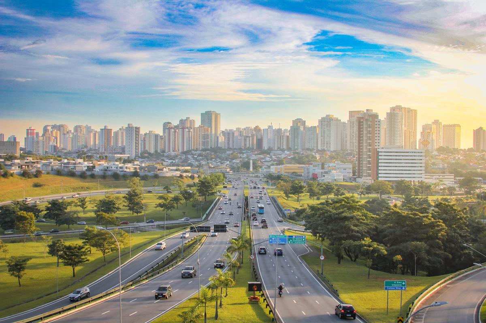
O Empreendedorismo Intuitivo mostra uma cidade com energia de execução. Há gente abrindo ponto, vendendo por WhatsApp, testando serviço, fazendo bico e adaptando oferta rapidamente.
Essa velocidade resolve problemas reais. Também pode produzir repetição quando vários negócios respondem à mesma moda com formatos parecidos. No campo, a sensação de “mais do mesmo” aparece especialmente em gastronomia e lazer.
Diferenciação não precisa significar invenção radical. Pode estar no público atendido, no horário, no serviço, na relação com o bairro, no preço, no cardápio, na experiência familiar ou na maneira de contar uma história local.
Uma pergunta ajuda a separar moda de oportunidade real: qual problema daqui ainda está sendo resolvido de forma mediana?
Iniciativa existe. O próximo ganho vem de repertório, gestão e diferença percebida.
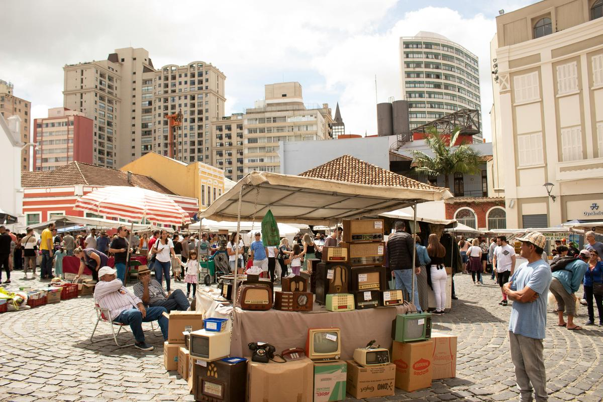
A cidade tem uma base técnica incomum, mas tecnologia ainda aparece muitas vezes como setor de trabalho, não como linguagem da vida urbana. Existe espaço para conectar ciência a design, audiovisual, música, games, educação, turismo e gastronomia sem transformar São José num parque temático de inovação.
Um festival pode usar ciência como linguagem. Um espaço cultural pode ocupar arquitetura industrial. Uma experiência turística pode contar a história aeroespacial. Uma marca local pode transformar engenharia em estética, memória ou produto.
Esse encontro também ajuda a reter talento. Profissionais não escolhem uma cidade apenas pelo emprego. Vida cultural, comunidade, mobilidade e experiência cotidiana entram na conta de permanecer.
O interesse está na convergência: quando a capacidade técnica deixa de viver isolada e passa a alimentar a cultura da cidade, ela ganha outro tipo de valor público.
Os seis casos não formam ranking nem receita. Cada um ilumina uma pergunta sobre identidade, cultura, inovação, mobilidade e experiência urbana.
Que ativo local pode sair do discurso institucional e ocupar a experiência cotidiana?
Como aproximar universidade, pesquisa, empresa e vida urbana sem fechar a inovação num circuito?
Como fazer os polos de inovação transbordarem para a economia cotidiana e a percepção pública?
Como fazer a história aeroespacial existir também na rua, no turismo e no orgulho cotidiano?
Como pensar deslocamento junto com permanência, encontro e acesso aos serviços?
Como transformar capacidade técnica em identidade acessível para além de quem já trabalha nela?
O Radar aponta perguntas. A etapa seguinte precisa reduzir incerteza antes de aumentar investimento.
1. Escolher um problema específico
Não tentar resolver “a cidade”. Definir público, território, horário e situação concreta. “Lazer” é amplo demais. “Famílias da Zona Sul que querem jantar sem atravessar a cidade e precisam de estrutura infantil” já é uma hipótese testável.
2. Validar no endereço certo
Conversar com quem vive naquela região. Observar concorrência, fluxo, estacionamento, transporte, preço, horário e como as pessoas já resolvem o problema hoje.
3. Construir pequeno antes de escalar
Evento piloto, pop-up, cardápio curto, turma teste, operação temporária ou parceria local reduzem o custo de aprender.
4. Medir retorno e repetição
Primeira visita pode vir por curiosidade. Recorrência mostra se a proposta encontrou espaço na rotina.
5. Escutar quem não voltou
O abandono silencioso é uma pista importante. Quem saiu pode ensinar mais do que quem permaneceu por hábito.
São José não precisa de mais promessa.
Precisa de teste bem feito, aprendizado rápido e coragem para abandonar ideia ruim antes de gastar demais nela.
Reter consumo não significa convencer o joseense a nunca sair da cidade. Circular é parte da vida regional e amplia repertório. A oportunidade está em aumentar a quantidade de vezes em que São José também entra na escolha.
Circuitos
Conectar bares, restaurantes, cafés, cultura e comércio em roteiros capazes de fazer uma região funcionar como destino. A força vem da combinação, não de uma marca isolada.
Festivais
Criar calendário reconhecível, recorrente e bem divulgado. Evento que acontece uma vez gera pico. Evento esperado cria hábito.
Mercados e feiras
Aproximar produtor local, gastronomia, artesanato, música e comunidade em formatos que funcionem além de uma edição promocional.
Serviços de bairro
Reduzir deslocamento com oferta de qualidade perto de onde as pessoas moram. Conveniência pode ser parte do valor.
Cultura e noite
Programação depois do jantar, variedade musical e espaços que permitam continuar a noite ampliam o tempo de permanência na cidade.
Reter consumo é dar mais razões para ficar sem transformar a saída para fora em inimiga.
As áreas abaixo aparecem repetidamente no Radar, mas nenhuma está “validada” como negócio pronto. Cada frente precisa de estudo específico de concorrência, público, preço e operação.
Gastronomia
Noite, família, autoria, preço coerente, café, vinho, produtores e programação. O espaço parece maior para conceitos com identidade do que para simples repetição de categoria.
Cultura & entretenimento
Música independente, cinema, rua, feiras, festivais e ocupação descentralizada. A pergunta central é acesso: quem descobre, quem chega e quem consegue voltar.
Serviços de proximidade
Pet, saúde, bem-estar, educação prática e conveniência de bairro. A força está em reduzir distância e resolver problemas recorrentes.
Tecnologia aplicada ao cotidiano
Descoberta local, automação para pequenos negócios, mobilidade, eventos e serviços urbanos. A tecnologia funciona melhor quando resolve uma fricção concreta sem aumentar complexidade.
Comunidade
Clubes, redes de produtores, grupos de interesse, esporte, networking e espaços de convivência. São José tem vida associativa espalhada, mas pouco conectada entre si.
O Radar serve para apontar onde vale perguntar melhor.
A segunda pesquisa começa quando uma dessas frentes vira decisão real de investimento.
A cidade tem uma história técnica rara no Brasil. Tem empresas, centros de pesquisa, universidades, parques, bairros consolidados e ondas sucessivas de gente que chegou para trabalhar e ficou.
A identidade já tem matéria-prima. Falta conectar os pedaços existentes e fazê-los aparecer com mais clareza no cotidiano.
Quando aviação, ciência e indústria ficam restritas ao ambiente institucional, viram reputação profissional. Quando encontram espaço público, educação, turismo, gastronomia, cultura e memória, podem virar repertório coletivo.
A identidade de São José também passa pelo que não cabe no discurso tecnológico: comércio de bairro, trabalhadores de serviço, música, periferias, parques, imigração interna e as diferentes formas de usar a cidade.
Uma narrativa forte não escolhe apenas a parte bonita.
Uma cidade começa a falar de si quando mais moradores conseguem se reconhecer na história que ela conta.
A pesquisa mostra uma percepção compartilhada: 51,6% dizem que setor público e privado ajudam a cidade a crescer juntos. O dado não resolve a divisão de responsabilidades, mas mostra que desenvolvimento é visto por boa parte da amostra como tarefa de mais de um ator.
Poder público
Infraestrutura, espaço público, mobilidade, cultura, regulação e coordenação territorial. É quem consegue atuar onde retorno privado não basta para garantir acesso.
Empresas
Emprego, serviço, investimento, inovação e experiências que entram na rotina. Também têm papel na qualidade do trabalho, do atendimento e da relação com o território.
Universidades e instituições de conhecimento
Pesquisa, formação, memória, ciência e conexão entre ideias e aplicação. São José já possui essa base; o desafio é aproximá-la ainda mais da vida pública.
Moradores e comunidades
Uso real da cidade, cultura de bairro, participação, consumo, associação e pressão por mudança. É onde uma política ou negócio descobre se funciona fora do papel.
Os quatro grupos não precisam concordar em tudo. Precisam conseguir enxergar problemas comuns e construir testes que façam sentido no território.
A cidade não tem um único protagonista. Talvez essa seja justamente a condição para o próximo passo.
As ideias abaixo não são 'oportunidades comprovadas' e não carregam promessa de retorno. Elas funcionam como agenda de investigação. Surgiram da combinação entre pesquisa, entrevistas, observação de campo e repertório de outras cidades.
As ideias abaixo não são 'oportunidades comprovadas' e não carregam promessa de retorno. Elas funcionam como agenda de investigação. Surgiram da combinação entre pesquisa, entrevistas, observação de campo e repertório de outras cidades.
477 respostas quantitativas.
10 entrevistas em profundidade.
Dezenas de incursões por diferentes regiões, horários e situações da cidade.
O Radar começou com uma pergunta sobre consumo: por que parte dos moradores procura fora de São José experiências que, em tese, poderiam existir aqui?
A resposta ficou maior do que a pergunta.
São José não é uma experiência única. A cidade muda com o bairro, a renda, o horário, o transporte, a fase de vida e o repertório de quem olha. Pode ser tranquila para uma pessoa e cansativa para outra. Pode parecer cheia de opção num eixo e limitada em outro. Pode produzir orgulho e, no mesmo morador, vontade de pegar a Dutra no fim de semana.
Os números mostram recorrências. As entrevistas dão linguagem a elas. A rua mostra onde algumas histórias ganham corpo e onde outras precisam de mais investigação.
O estudo também encontrou algo que vale preservar: a crítica quase nunca nasce da indiferença. Muitas das reclamações vêm justamente de quem acredita que São José poderia entregar mais porque já conhece a capacidade que a cidade tem.
Este relatório não fecha São José numa conclusão. Organiza sinais suficientes para fazer perguntas melhores antes da próxima decisão.
Radar São José 2026
radarsaojose.com.br
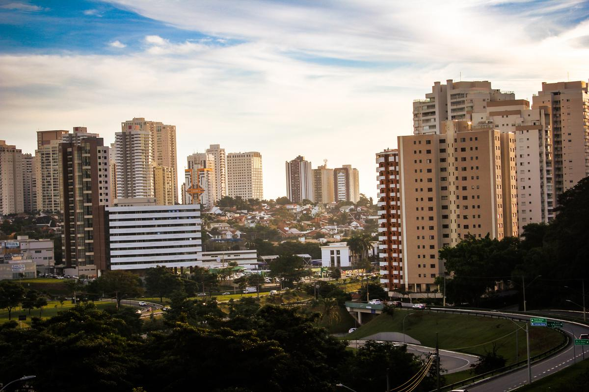
Como o Radar foi construído, o que cada evidência permite afirmar e onde consultar as referências utilizadas.
Este bloco reúne a documentação da apresentação em uma seção própria. A pesquisa com moradores, as entrevistas e o campo aparecem separados dos registros públicos e estudos externos.
O universo da pesquisa é formado por moradores de São José dos Campos com 16 anos ou mais. A coleta aconteceu em março de 2026.
A amostra foi construída por cotas, com recrutamento balanceado a partir de parâmetros do Censo 2022 do IBGE. Durante toda a coleta, a equipe acompanhou a distribuição das respostas por região e bairro, faixa etária, gênero e renda.
O recrutamento aconteceu principalmente por mídia digital, com segmentação em Instagram, Facebook e LinkedIn. Quando um território ou perfil estava abaixo do desejado, o tráfego era direcionado para aquela combinação. Quando uma cota já estava suficientemente preenchida, o recrutamento daquele grupo era reduzido ou encerrado.
Moradores com 16 anos ou mais ouvidos na etapa quantitativa.
Para o conjunto da amostra.
Nível estatístico padrão.
Nota: em recortes menores, a incerteza aumenta conforme a base diminui.
Leitura da precisão: ±4,5 p.p. é o cálculo ilustrativo para uma amostra aleatória simples de 477 pessoas, a 95% e p=50%. O recrutamento descrito é digital e por cotas; essa referência não constitui margem de erro probabilística validada para esta amostra.
O recrutamento foi monitorado para evitar que a amostra se concentrasse apenas nas regiões mais fáceis de alcançar ou nos perfis que mais respondem a pesquisas online.
Os gráficos descrevem a base ou o recorte selecionado. A composição dos respondentes não deve ser confundida com a distribuição da população da cidade.
Depois da primeira leitura da pesquisa quantitativa, foram definidos perfis que valia a pena encontrar na cidade. A seleção buscou diferentes regiões, idades, ocupações e condições econômicas.
As entrevistas foram semiestruturadas e duraram aproximadamente uma hora e meia. O registro combinou anotações, alguns trechos gravados e reconstrução de conteúdo logo após as conversas.
As falas publicadas foram editadas para retirar repetições, organizar pontuação e facilitar a leitura, preservando o sentido, o vocabulário e o jeito de falar de cada pessoa.
As fotos dos dez perfis são ilustrativas e não retratam os entrevistados. O objetivo é personificar atitudes, contradições e tensões reais de São José dos Campos.
A Invasão de Cenários é a metodologia de observação de campo do Radar, inspirada em práticas etnográficas. A ideia é acompanhar pessoas, lugares, fluxos e comportamentos enquanto a cidade está acontecendo.
Foram dezenas de saídas em diferentes regiões, horários e dias da semana. Bares, restaurantes, shoppings, parques, feiras, ruas, ônibus, pontos de ônibus, comércio popular, corredores de lazer e eventos entraram no campo.
A equipe observou fluxo, permanência, filas, ocupação, preço, iluminação, manutenção, deslocamento, comportamento de compra e repetição de formatos comerciais. Conversas informais com comerciantes e frequentadores também ajudaram a construir contexto.
Quando uma observação de campo for especialmente importante, ela aparece no relatório identificada como OBSERVADO EM CAMPO.
Leia o tamanho da base indicado em cada tela. Perguntas sem resposta e recortes mudam o denominador; bases menores pedem mais cautela.
Uma pessoa pode selecionar mais de uma opção. Por isso, a soma das categorias pode ultrapassar 100%.
As entrevistas aprofundam sentidos e tensões. Falas do questionário são outra origem de evidência; nenhuma das duas mede frequência populacional por si só.
País, período e universo são próprios de cada fonte. Dados nacionais ou internacionais contextualizam São José, sem se tornarem percentuais locais.
São sínteses editoriais construídas pelo Radar. Servem para formular perguntas e testes; não são segmentação estatística fechada nem demanda comercial comprovada.
O Modelo Radar combina percentuais da amostra com parâmetros de referência. A parcela de 10% é uma hipótese de cálculo; o resultado não mede perda econômica oficial.
AMERICAN ASSOCIATION FOR PUBLIC OPINION RESEARCH. Understanding a credibility interval and how it differs from the margin of sampling error in a public opinion poll. [S. l.]: AAPOR, 2012. Disponível em: https://aapor.org/statements/understanding-a-credibility-interval-and-how-it-differs-from-the-margin-of-sampling-error-in-a-public-opinion-poll/. Acesso em: 2 nov. 2026.
Ver contexto no relatório →BRASIL. Ministério do Trabalho e Emprego. Perfil do Município. Brasília, DF: MTE, 2023. Disponível em: https://www.gov.br/trabalho-e-emprego/pt-br/acesso-a-informacao/acoes-e-programas/programas-projetos-acoes-obras-e-atividades/estatisticas-trabalho/perfil-do-municipio. Acesso em: 2 nov. 2026.
Ver contexto no relatório →IBGE. São José dos Campos: Cidades e Estados. Rio de Janeiro: IBGE, [20--]. Disponível em: https://www.ibge.gov.br/cidades-e-estados/sp/sao-jose-dos-campos.html. Acesso em: 2 nov. 2026.
Ver contexto no relatório →SÃO JOSÉ DOS CAMPOS. Observatório do Trabalho. Perfil do Mundo do Trabalho 2024. São José dos Campos: Prefeitura, 2024. Disponível em: https://observatoriodotrabalho.sjc.sp.gov.br/index.php/perfil-do-mundo-do-trabalho-2024/. Acesso em: 2 nov. 2026.
Ver contexto no relatório →DELOITTE. 2025 Digital Media Trends: social platforms are becoming a dominant force in media and entertainment. [S. l.]: Deloitte Insights, 2025. Disponível em: https://www.deloitte.com/us/en/insights/industry/technology/digital-media-trends-consumption-habits-survey/2025.html. Acesso em: 2 nov. 2026.
Ver contexto no relatório →GLOBAL ENTREPRENEURSHIP MONITOR. GEM 2024/2025 Global Report: Entrepreneurship Reality Check. [S. l.]: GEM, 2025. Disponível em: https://www.gemconsortium.org/report/gem-20242025-global-report-entrepreneurship-reality-check-4. Acesso em: 2 nov. 2026.
Ver contexto no relatório →GLOBO GENTE. Cultura no Espelho: como brasileiros enxergam e vivem a cultura brasileira. [S. l.]: Globo, 16 mar. 2026. Disponível em: https://gente.globo.com/colecao/comportamentos-emergentes/estudo/cultura-no-espelho-como-brasileiros-enxergam-e-vivem-a-cultura-brasileira.ghtml. Acesso em: 2 nov. 2026.
Ver contexto no relatório →GLOBO GENTE. Do chat à compra: a jornada omnichannel dos pluriconsumidores. [S. l.]: Globo, 26 out. 2026. Disponível em: https://gente.globo.com/colecao/tendencias-de-consumo/texto/do-chat-a-compra-a-jornada-omnichannel-dos-pluriconsumidores.ghtml. Acesso em: 2 nov. 2026.
Ver contexto no relatório →GLOBO GENTE. Tendências Brasil 2026: o novo mapa do consumidor brasileiro. [S. l.]: Globo, 25 mar. 2026. Disponível em: https://gente.globo.com/colecao/tendencias-de-consumo/estudo/tendencias-brasil-2026-o-novo-mapa-do-consumidor-brasileiro.ghtml. Acesso em: 2 nov. 2026.
Ver contexto no relatório →GLOBO GENTE. Vida noturna no Brasil: a festa que começa (e termina) mais cedo. [S. l.]: Globo, 5 out. 2026. Disponível em: https://gente.globo.com/colecao/tendencias-de-consumo/texto/vida-noturna-no-brasil-a-festa-que-comeca-e-termina-mais-cedo.ghtml. Acesso em: 2 nov. 2026.
Ver contexto no relatório →IPSOS. Escape to Individualism. [S. l.]: Ipsos, 17 set. 2024. Disponível em: https://www.ipsos.com/en/global-trends-2024/escape-individualism. Acesso em: 2 nov. 2026.
Ver contexto no relatório →IPSOS. Technowonder. [S. l.]: Ipsos, 17 set. 2024. Disponível em: https://www.ipsos.com/en/global-trends-2024/technowonder. Acesso em: 2 nov. 2026.
Ver contexto no relatório →IPSOS. The Power of Trust. [S. l.]: Ipsos, 17 set. 2024. Disponível em: https://www.ipsos.com/en/global-trends-2024/power-trust. Acesso em: 2 nov. 2026.
Ver contexto no relatório →MINTEL. Mintel announces Global Consumer Trends for 2024. [S. l.]: Mintel, 2 out. 2023. Disponível em: https://www.mintel.com/press-centre/mintel-announces-global-consumer-trends-for-2024/. Acesso em: 2 nov. 2026.
Ver contexto no relatório →SEBRAE/PR. Retrato do Empreendedorismo no Brasil – GEM 2024-2025. [S. l.]: Sebrae/PR, 4 abr. 2025. Disponível em: https://sebraepr.com.br/impulsiona/retrato-do-empreendedorismo-no-brasil-gem-2024-2025/. Acesso em: 2 nov. 2026.
Ver contexto no relatório →IBGE. Trabalho por meio de plataformas digitais 2024. Rio de Janeiro: IBGE, 2025. Disponível em: https://www.ibge.gov.br/estatisticas/sociais/populacao/17270-pnad-continua.html?edicao=44741. Acesso em: 2 nov. 2026.
Ver contexto no relatório →OECD. Leveraging culture, sports and business events for local development. Paris: OECD Publishing, 9 jul. 2024. Disponível em: https://www.oecd.org/en/publications/leveraging-culture-sports-and-business-events-for-local-development_9080aeae-en.html. Acesso em: 2 nov. 2026.
Ver contexto no relatório →OECD. OECD Survey on Drivers of Trust in Public Institutions – 2024 Results: executive summary. Paris: OECD Publishing, 2024. Disponível em: https://www.oecd.org/en/publications/oecd-survey-on-drivers-of-trust-in-public-institutions-2024-results_9a20554b-en/full-report/executive-summary_7c5c9309.html. Acesso em: 2 nov. 2026.
Ver contexto no relatório →SEBRAE. Como validar seu modelo de negócio. [S. l.]: Sebrae, [20--]. Disponível em: https://loja.sebrae.com.br/como-validar-seu-modelo-de-negocio-1-371440103453. Acesso em: 2 nov. 2026.
Ver contexto no relatório →UN-HABITAT. World Smart Cities Outlook 2024. [S. l.]: UN-Habitat, 2024. Disponível em: https://unhabitat.org/world-smart-cities-outlook-2024. Acesso em: 2 nov. 2026.
Ver contexto no relatório →WORLD TOURISM ORGANIZATION; BASQUE CULINARY CENTER. Guidelines for the Development of Gastronomy Tourism. Madrid: UNWTO, 2019. Disponível em: https://www.untourism.int/global/publication/guidelines-development-gastronomy-tourism. Acesso em: 2 nov. 2026.
Ver contexto no relatório →INSTITUTO NACIONAL DE PESQUISAS ESPACIAIS. História. [S. l.]: INPE, 29 jul. 2021. Disponível em: https://www.gov.br/inpe/pt-br/acesso-a-informacao/institucional/historia. Acesso em: 2 nov. 2026.
Ver contexto no relatório →PAPALI, Maria Aparecida; ZANETTI, Valéria; OLMO, Maria José Acedo del. São José dos Campos e sua história. São José dos Campos: Pró-Memória — Câmara Municipal de São José dos Campos, [20--]. Disponível em: https://www.camarasjc.sp.gov.br/promemoria/historia-sjc/. Acesso em: 2 nov. 2026.
Ver contexto no relatório →SÃO JOSÉ DOS CAMPOS. Prefeitura. Eugênio de Melo. São José dos Campos: Prefeitura de São José dos Campos, [20--]. Disponível em: https://www.sjc.sp.gov.br/servicos/inovacao-e-desenvolvimento-economico/turismo/eugenio-de-melo/. Acesso em: 2 nov. 2026.
Ver contexto no relatório →SÃO JOSÉ DOS CAMPOS. Prefeitura. Mapa da cidade. São José dos Campos: Prefeitura de São José dos Campos, [20--]. Disponível em: https://www.sjc.sp.gov.br/servicos/governanca/sao-jose-em-dados/mapa/. Acesso em: 2 nov. 2026.
Ver contexto no relatório →SÃO JOSÉ DOS CAMPOS. Prefeitura. Vicentina Aranha faz 102 anos com Orquestra Joseense e Céu. São José dos Campos: Prefeitura de São José dos Campos, 22 abr. 2026. Disponível em: https://www.sjc.sp.gov.br/noticias/2026/abril/22/vicentina-aranha-faz-102-anos-com-orquestra-joseense-e-ceu/. Acesso em: 2 nov. 2026.
Ver contexto no relatório →SÃO JOSÉ DOS CAMPOS. Observatório do Trabalho. Relatório – Empreendedorismo e Abertura de Empresa – 1º trimestre de 2026. São José dos Campos: Prefeitura, 2026. Disponível em: https://observatoriodotrabalho.sjc.sp.gov.br/index.php/sao_jose_em_numeros/abertura-de-empresas/. Acesso em: 2 nov. 2026.
Ver contexto no relatório →SÃO JOSÉ DOS CAMPOS. Prefeitura. City Tour visita o Memorial Aeroespacial Brasileiro. São José dos Campos: Prefeitura, 23 jun. 2025. Disponível em: https://www.sjc.sp.gov.br/noticias/2025/junho/23/city-tour-visita-o-memorial-aeroespacial-brasileiro/. Acesso em: 2 nov. 2026.
Ver contexto no relatório →SÃO JOSÉ DOS CAMPOS. Prefeitura. No Dia do Feirante, São José celebra tradição das feiras livres. São José dos Campos: Prefeitura, 25 ago. 2025. Disponível em: https://www.sjc.sp.gov.br/noticias/2025/agosto/25/no-dia-do-feirante-sao-jose-celebra-tradicao-das-feiras-livres/. Acesso em: 2 nov. 2026.
Ver contexto no relatório →SÃO JOSÉ DOS CAMPOS. Prefeitura. Vicentina Aranha conclui restauro completo do Pavilhão São João. São José dos Campos: Prefeitura, 26 maio 2026. Disponível em: https://www.sjc.sp.gov.br/noticias/2026/maio/26/vicentina-aranha-conclui-restauro-completo-do-pavilhao-sao-joao/. Acesso em: 2 nov. 2026.
Ver contexto no relatório →BRAINPORT DEVELOPMENT. Brainport Development: economic development agency. Eindhoven: Brainport Development, [20--]. Disponível em: https://brainporteindhoven.com/en/strategy-organisation/brainport-development. Acesso em: 2 nov. 2026.
Ver contexto no relatório →INSTITUTO FESTIVAL DE DANÇA DE JOINVILLE. Palcos Abertos. Joinville: Instituto Festival de Dança, 2026. Disponível em: https://festivaldedancadejoinville.com.br/palcos-abertos/. Acesso em: 2 nov. 2026.
Ver contexto no relatório →METRO DE MEDELLÍN. El Metrocable Picacho ha movilizado cerca de 200.000 usuarios en su primer mes de operación. Medellín: Metro de Medellín, [20--]. Disponível em: https://www.metrodemedellin.gov.co/al-dia/noticias/el-metrocable-picacho-ha-movilizado-cerca-de-200.000-usuarios-en-su-primer-mes-de-operaci%C3%B3n. Acesso em: 2 nov. 2026.
Ver contexto no relatório →PARQUE TECNOLÓGICO DE SOROCABA. Institucional. Sorocaba: PTS, [20--]. Disponível em: https://www.parquetecsorocaba.com.br/institucional/. Acesso em: 2 nov. 2026.
Ver contexto no relatório →TOULOUSE TOURISME. Capitale aérospatiale. Toulouse: Office de Tourisme, [20--]. Disponível em: https://www.toulouse-tourisme.com/a-voir-a-faire/capitale-aerospatiale/. Acesso em: 2 nov. 2026.
Ver contexto no relatório →UNIVERSIDADE FEDERAL DE UBERLÂNDIA. Ambiente de Inovação. Uberlândia: UFU, [20--]. Disponível em: https://propp.ufu.br/agencia-intelecto/ambiente-de-inovacao. Acesso em: 2 nov. 2026.
Ver contexto no relatório →RADAR SÃO JOSÉ. Pesquisa com moradores. São José dos Campos, 2026. Documentação interna de pesquisa. Consultar método →
RADAR SÃO JOSÉ. Entrevistas em profundidade. São José dos Campos, 2026. Documentação interna de pesquisa. Consultar método →
RADAR SÃO JOSÉ. Invasão de Cenários. São José dos Campos, 2026. Documentação interna de pesquisa. Consultar método →
Fotografias de São José dos Campos: acervo André Paixão / Studio 8. Banco de imagens: Pexels / acervo Radar, identificado como ilustrativo nas legendas.
Memorial Aeroespacial Brasileiro: Charles de Moura / PMSJC, conforme notícia municipal citada no relatório.
As fotos dos dez perfis qualitativos são ilustrativas. Os mapas indicam áreas de referência e não representam trajetos ou frequência individual de visitas.
Os 200 mil vínculos formais são usados como referência arredondada no cenário; 16% vem da resposta “Sim, sempre”; 10,5% é premissa editorial conservadora definida pelo Radar.
Referência salarial de R$ 5.732 atribuída ao portal no material original do Radar. O título e o endereço específicos não foram identificados; a atribuição não equivale a uma referência documental verificada.
Consultar o Modelo Radar →Acervo Radar São José
Carregando acervo visual...
Livre para uso editorial, comercial e em apresentações do projeto.
PREFEITO
Anderson Farias
Mandato 2025-2028 (Reeleito)
GENTÍLICO
joseense
População natural de SJC
ÁREA TERRITORIAL
— km²
Área territorial · Censo 2022
DENSIDADE
— hab/km²
Censo Demográfico 2022
BIOMA
Mata Atlântica
com enclaves de Cerrado
Território: edição do Censo 2022, compatível com a densidade. IBGE · território e população · Prefeitura · mandato 2025–2028
Competência e universo junto ao valor. Abra o eixo para aprofundar.
—
habitantes · Censo 2022
Comparação censitária em conferência. Estimativa IBGE 2026: — hab. Em 2024: —.
—
IDHM · 2010 · muito alto
Índice do Atlas/PNUD, com referência no Censo 2010. Esta competência histórica não representa uma medição de 2026.
—
Escolarização de 6 a 14 anos · Censo 2022
Percentual da população dessa faixa etária que frequenta escola. Não equivale ao número de matrículas nem à nota do IDEB.
—
PIB por habitante · 2023
Valor nominal a preços correntes. Mede produção por habitante; não é renda média pessoal. Últimos anos sujeitos a revisão.
SEGURANÇA PÚBLICA
SAÚDE COLETIVA
MEIO AMBIENTE & SANEAMENTO
—
População atendida com rede de água · 2023
Acessar eixo →SINISA · não equivale a qualidade da águaMOBILIDADE URBANA
ECONOMIA & TRABALHO
EDUCAÇÃO BÁSICA
BENCHMARK MULTICIDADES
Comparar cidades
Referências de competências distintas; confira cada ficha.
Acessar eixo →DEMOGRAFIA
19ª Legislatura · 21 vereadores · Classificação metodológica: GPS Partidário 2026 (Folha de S.Paulo)
Use Tab para ler as cadeiras; nomes e filiações exibidos permanecem sujeitos à revisão indicada abaixo.

Fabião Zagueiro, Marcão da Academia, Zé Luís, Rafael Pascucci, Roberto do Eleven, Claudio Apolinário

Thomaz Henrique, Roberto Chagas, Lino Bispo, Senna, Sérgio Camargo

Fernando Petiti, Sidney Campos

Amélia Naomi, Juliana Fraga

Marcelo Garcia, Gilson Campos

Renato Santiago

Milton Vieira Filho

Carlos Abranches

Rogério da Acasem
A posição ideológica apresentada refere-se à legenda partidária, e não constitui classificação individual dos vereadores. Para a classificação das siglas, foi utilizada como referência a metodologia do GPS Partidário 2026, da Folha de S.Paulo. Nomes e filiações partidárias: Câmara Municipal de São José dos Campos. Visualização e cálculos: Radar São José 2026.
Legislatura 2025–2028. O hemiciclo e suas filiações exibidas foram preservados; a atualização partidária e a classificação ideológica permanecem pendentes de revisão específica. Consulte a composição oficial atual.
Contagem oficial do Censo Demográfico (IBGE SIDRA Tab. 4714).
Estimativa oficial do IBGE (SIDRA 6579); produto distinto do Censo.
Área da edição SIDRA 2022: 1.099,409 km²; recorte urbano/rural pendente.
Particulares permanentes ocupados; não equivale ao total recenseado.
01 · Crescimento
Censos e estimativas em séries separadas.
Carregando projeção auditada…
02 · Estrutura etária
21 faixas · contagens e participação no total municipal.
Carregando projeção auditada…
Métricas por Censo; ausências preservadas.
03 · Sexo
Participação e contagens sem interpolação anual.
Carregando projeção auditada…
04 · Cor ou raça
Composição da população no Censo selecionado.
Carregando projeção auditada…
05 · Religião
Categorias disponíveis no Censo selecionado.
Carregando projeção auditada…
06 · Moradia
Conheça os domicílios da cidade e suas transformações ao longo dos Censos.
Carregando projeção auditada…
Leitura complementar
Classificação oficial de cada edição do Censo.
Carregando projeção auditada…
07 · Território
Consulte a população, densidade e renda por bairros, macro-regiões e setores censitários do IBGE.
Malha definitiva do Censo 2022: 1.554 setores censitários, com correspondência pelo geocódigo oficial. A malha de 35 bairros cobre parte do município; seus nomes publicados, como “Setor Socioeconômico 01”, não são um catálogo de bairros populares.
Situação urbana e rural segue a classificação do IBGE. Densidade usa população e área da mesma unidade. Domicílios ocupados incluem particulares permanentes e improvisados; não são equivalentes ao indicador de permanentes ocupados.
Sexo, idade e rendimento respeitam os universos próprios das publicações. Células suprimidas ou ausentes não são reconstruídas nem convertidas em zero. Rendimento é o valor nominal mensal do responsável com rendimentos, não a renda média de todos os moradores.
As divisões municipais e referências históricas de 2018 permanecem preservadas no acervo, sem associação automática aos resultados desta malha.
Censo Demográfico 2022 · Recortes Especiais
Outros retratos da população de São José dos Campos investigados pelo IBGE.
Universo: População residente de 15 anos ou mais de idade (568.199 pessoas). Não se confunde com taxa de escolarização ou frequência escolar.
Fonte oficial: IBGE · SIDRA Tabelas 9542 e 9543 (Censo Demográfico 2022).
Critério censitário: Pessoas autodeclaradas indígenas no quesito de cor ou raça. A tabela 9718 registra os 629 residentes fora de Terras Indígenas. Essa contagem não demonstra, por si só, a inexistência de delimitações territoriais.
Fonte oficial: IBGE · SIDRA Tabelas 9718 e 9608 (Censo Demográfico 2022).
Conceito IBGE: Favelas e Comunidades Urbanas oficiais no território estrito de São José dos Campos (código 3549904). Dados referem-se estritamente aos polígonos municipais do Censo 2022, sem agregação com a Concentração Urbana regional.
Fonte oficial: IBGE · SIDRA Tabelas 9883, 9887, 9888 e 9884 (Censo Demográfico 2022).
Carregando os recortes oficiais de Saúde…
Carregando os registros de Segurança…
Carregando indicadores ambientais…
Riqueza municipal, estrutura produtiva e trabalho formal - dados oficiais aprovados na P1.
Dado não disponível
bilhões · 2023
Preços correntes; sujeito a revisão.
Dado não disponível
R$/habitante · 2023
Valor publicado pelo IBGE.
Dado não disponível
vínculos · ago/2026
Competência mensal; Novo CAGED.
Dado não disponível
vínculos líquidos · jan–ago/2026
Parcial até agosto; com ajustes.
O tamanho da economia e sua evolução a preços correntes.
Série oficial 2002–2023. Uma métrica por vez; sem misturar unidades.
Dados não disponíveis neste recorte. Nenhuma ausência foi preenchida.
Valores positivos e negativos em relação ao ano anterior.
Dados não disponíveis neste recorte. Nenhuma ausência foi preenchida.
De onde vem o PIB e como cada componente ganhou ou perdeu participação.
Componentes separados; percentuais do PIB, incluindo impostos.
Dados não disponíveis neste recorte. Nenhuma ausência foi preenchida.
Linhas por componente. Abertura oficial 2002–2021.
Dados não disponíveis neste recorte. Nenhuma ausência foi preenchida.
Evolução dos vínculos, remuneração média e saldos do emprego formal. Cada indicador informa sua fonte e período de referência.
80 competências mensais, de jan/2020 a ago/2026.
Dados não disponíveis neste recorte. Nenhuma ausência foi preenchida.
CEMPRE 2022–2024; valores em reais são nominais.
Dados não disponíveis neste recorte. Nenhuma ausência foi preenchida.
Barras acima e abaixo de zero; somente meses publicados.
Dados não disponíveis neste recorte. Nenhuma ausência foi preenchida.
Balanço anual. Admissões, desligamentos e último estoque no tooltip.
Dados não disponíveis neste recorte. Nenhuma ausência foi preenchida.
Rede pública, IDEB 2025. Metas do primeiro ciclo somente até 2021.
Rede pública, IDEB 2025. IDEB distinto de nota SAEB.
Censo Escolar 2023: 163.965 matrículas em todas as redes; não alunos únicos.
Censo Demográfico 2022: 99,09% dos residentes de 6 a 14 anos frequentavam escola.
Taxas de aprovação, escolarização obrigatória e distorção idade-série
Carregando recortes de Mobilidade…
De onde vem o dinheiro e para onde vai · receitas, despesas e escolhas orçamentárias.
Comparações anuais encerradas em 2025. O exercício de 2026 é parcial e aparece separadamente, abaixo.
Dado não disponível
Receita orçamentária realizada · 2025
Dado não disponível
Despesa orçamentária empenhada · 2025
Dado não disponível
Receita − empenhada · coincide com Anexo 14, p. 39
Dado não disponível
Investimentos · GND 4 · liquidado · 2025
Entenda como o estágio da despesa altera a comparação com a receita municipal.
Mesmo exercício e orçamento consolidado, incluindo operações intraorçamentárias nos dois lados. Barras partem de zero; diferenças são exibidas até os centavos.
Receita: Anexo 1, p. 2, TOTAL DAS RECEITAS (V), coluna realizadas até o bimestre (c). Despesas: p. 3, TOTAL DAS DESPESAS (XII), colunas empenhadas (f), liquidadas (h) e pagas (j). O Anexo 14, p. 39, publica a linha Déficit Orçamentário: R$ 133.440.022,16.
O OVALE, acessível nesta conferência, e sua reprodução no Aqui Vale informam R$ 5,112 bilhões de receita e R$ 5,115 bilhões de despesa liquidada. Os valores exatos oficiais produzem R$ 3.169.577,33 de diferença negativa. O título jornalístico de R$ 3,1 milhões é aproximado; arredondando a uma casa decimal seriam R$ 3,2 milhões. Não existe linha autônoma de déficit oficial de R$ 3,17 milhões neste RREO.
RREO · Anexo 14 · página 39 ↗ · RREO · Anexo 1 · páginas 2 e 3 ↗ · Reportagem OVALE ↗ · Reprodução Aqui Vale ↗O orçamento é comprometido para uma obrigação.
O direito do credor é verificado, por exemplo após entrega ou serviço.
O recurso é desembolsado. Os estágios não devem ser somados.
2015–2025 · valores nominais/correntes · total RREO, inclui intraorçamentárias.
Receita realizada − despesa empenhada. Não equivale a resultado primário, nominal ou de caixa.
Empenhar compromete o orçamento; liquidar reconhece a obrigação após a entrega; pagar representa a saída financeira.
Despesa municipal por função orçamentária · funções oficiais, sem agrupamentos inventados.
2013–2025 · valores correntes · ausência preservada como lacuna.
Receitas correntes e de capital · brutas, exceto intraorçamentárias. Não representa receita líquida.
2022–2025 · classificação pós-2022; séries anteriores a 2018/2022 não concatenadas.
ASPS e MDE são indicadores constitucionais específicos e não equivalem à despesa total das funções Saúde e Educação.
2013–2025 · GND 4 · valores correntes, não toda a despesa de capital.
DTP/RCL ajustada · parâmetros publicados, sem diagnóstico de regularidade. 2025 Q3: percentual confirmado; DTP absoluta suspensa.
2025 Q3: Valor suspenso: divergência entre versões oficiais consultadas.
São medidas diferentes do resultado orçamentário. O primário compara receitas e despesas primárias, excluindo componentes financeiros conforme o demonstrativo; considera também restos a pagar pagos. O nominal incorpora juros ou mede a variação da dívida líquida, conforme o método.
Anexo 6, p. 27, coluna VALOR: primário XXXV; nominal XXXVIII = XXXV + juros ativos − juros passivos; nominal XLIII = dívida consolidada líquida anterior − atual. Após ajuste metodológico, o nominal abaixo da linha (L) é R$ 88.411.258,79. Não substituir um método pelo outro. O primário com RPPS (XXXIV) é − R$ 155.899.746,31. Os valores desta seção vêm diretamente do PDF e não alteram o contrato histórico do Radar.
Anexo 6 · página 27 ↗No fechamento do exercício, compromissos ainda não liquidados podem ser inscritos em restos a pagar não processados. Em 2025, a diferença coincide exatamente com a inscrição publicada no Anexo 1, p. 3, coluna (k).
Esse valor já integra a despesa empenhada: somá-lo novamente geraria dupla contagem. Não significa automaticamente dívida vencida. Restos processados já foram liquidados e ainda não pagos; os não processados ainda dependem de liquidação.
Orçamento registra a execução de receitas e compromissos. Caixa mede disponibilidades em uma data, com vinculações e obrigações. Dívida é um estoque de obrigações com critérios próprios. A comparação com pagamentos do exercício não inclui toda a movimentação financeira nem prova dinheiro livre para gastar. O gráfico de restos a pagar abaixo acompanha o demonstrativo específico e não deve ser somado à despesa do ano.
Anexo 1 · página 3 ↗O Anexo 4, p. 21, publica R$ 272.758.816,58 em “Recursos para Cobertura de Insuficiências Financeiras”, no fundo em repartição do RPPS, coluna “APORTES REALIZADOS”. A reportagem alega R$ 272,7 milhões não repassados. A proximidade numérica não comprova que sejam os mesmos lançamentos.
A rubrica publicada não comprova, isoladamente, pagamento bancário pela Prefeitura ou recebimento pelo IPSM. Contribuições patronais ordinárias, cobertura de insuficiência financeira e parcelamentos são categorias distintas. Falta conciliar por entidade, fundo, competência, obrigação exigível, pagamento e recebimento, com razão contábil, extratos, balanços, notas e atos de parcelamento. O índice oficial de demonstrações do IPSM foi localizado; os documentos individuais ainda não foram reconciliados.
Os R$ 275,9 milhões são um cenário jornalístico, não déficit oficial. Nenhum aporte é adicionado aos R$ 133,44 milhões. Não há KPI conclusivo de inadimplência nesta página.
RREO · Anexo 4 · página 21 ↗ · Demonstrações contábeis do IPSM ↗Caixa: Executivo/RGF. Restos a pagar: consolidado/RREO. Escopos separados pelo controle.
Consulte diretamente os demonstrativos originais emitidos pela Secretaria de Gestão Financeira da Prefeitura de São José dos Campos e homologados no SICONFI / Tesouro Nacional.
Receitas realizadas (R$ 5,11 bi), despesas empenhadas (R$ 5,25 bi), liquidadas (R$ 5,12 bi), pagas (R$ 5,05 bi) e restos a pagar não processados inscritos (R$ 130,27 mi).
Abrir Anexo 1 (pp. 1–6) ↗Receitas e despesas do Plano Financeiro e Previdenciário. Escrituração de R$ 272,76 mi em recursos para cobertura de insuficiências financeiras sob aportes realizados.
Abrir Anexo 4 (pp. 18–25) ↗Resultado Primário sem RPPS de + R$ 89,35 mi (meta de R$ 89,96 mi) e Resultado Nominal sem RPPS de + R$ 104,03 mi (meta de − R$ 24,10 mi).
Abrir Anexo 6 (pp. 26–28) ↗Quadro-resumo da Lei de Responsabilidade Fiscal, publicando expressamente a linha oficial do Déficit Orçamentário de R$ 133.440.022,16.
Abrir Anexo 14 (pp. 39–41) ↗• RGF 3º Quadrimestre 2025: Demonstrativos de despesa com pessoal (26,99% da RCL), dívida consolidada líquida e disponibilidade de caixa do Poder Executivo (RGF cop_000009766.pdf ↗).
• Regras contábeis: Lei Federal nº 4.320/1964 (Normas Gerais de Direito Financeiro), Lei Complementar nº 101/2000 (Lei de Responsabilidade Fiscal) e Manual de Demonstrativos Fiscais (MDF) da Secretaria do Tesouro Nacional (STN).
• Base de dados abertos: Todas as séries históricas do Radar utilizam a API pública de dados abertos do SICONFI / Tesouro Nacional sem alterações de valores.
RREO consolidado · valores correntes · não comparar com exercícios completos.
Carregando as comparações territoriais…
Consistência local e evidência externa são verificações distintas.
scripts/ai_data_auditor.py
A auditoria desta versão não foi carregada. Relatórios históricos preservam suas datas e não comprovam uma nova consulta às fontes oficiais. Os status cadastrados nos indicadores são declarações anteriores, disponíveis nas fichas técnicas.
Geração de diagnósticos de viabilidade com cruzamento de microdados da pesquisa municipal.
Nossa Inteligência Artificial cruza 477 respostas da pesquisa municipal com os 5 frameworks corporativos de maior prestígio para auditar a viabilidade do seu negócio em SJC.
COMO FUNCIONA
Informe o segmento e bairro desejado em SJC (ex: cafeteria no Aquarius, estética no Urbanova).
A IA analisa a renda, perfis demográficos e carências dos 150+ bairros mapeados.
Receba o diagnóstico em SWOT, PESTEL, Porter, Ishikawa e 4 Movimentos com ações práticas.
METODOLOGIA DE ALTA GESTÃO
Identifica Forças, Fraquezas, Oportunidades e Ameaças locais.
Fatores políticos, econômicos, sociais e tecnológicos em SJC.
Concorrentes, barreiras de entrada e poder de barganha local.
Prevenção de gargalos operacionais, atendimento e logística.
Eliminar, Reduzir, Elevar e Criar valor sem guerra de preços.
Iniciando processamento analítico de São José dos Campos...
Cruzando microdados municipais com 5 frameworks estratégicos de alta gestão.
Base de Dados: Pesquisa Municipal Radar SJC (N=477, IC=95%, Erro ±4.5%)
Consulte a formação histórica, a origem dos nomes, os primeiros loteamentos e as fontes de pesquisa de cada região de São José dos Campos.
Série Histórica Documentada • 1798 a 2026
Fontes primárias, leis provinciais e municipais, decretos, atas da Câmara e estudos acadêmicos consultados.
Cientistas, médicos, aviadores, educadores e personagens que marcaram o desenvolvimento científico, cultural e humano da cidade.
Nota editorial sobre os retratos: As obras visuais desta seção foram geradas por inteligência artificial em estilo pictórico inspirado na técnica de luz e sombra de Rembrandt. As artes tiveram como referência fotografias e registros de acervos históricos disponíveis. Nos casos em que não foram localizados retratos de época, os rostos foram concebidos a partir da imaginação da IA e recebem a identificação de Retrato interpretativo.
Fontes consultadas nos capítulos de ciclos, bairros, patrimônio, migração e cultura oral.
A evolução demográfica e os principais períodos migratórios que transformaram São José dos Campos de vila sanatorial em metrópole tecnológica.
1767
Este acontecimento possui registros com divergência documental de ano, autoria ou recorte. O Radar SJC preserva as versões com rigor arquivístico.
| Documento / Acervo | Tipo de Fonte | Acesso |
|---|
Selecione um marco com referência aberta para consultar a síntese e a fonte indicada.
A cronologia da Câmara registra a elevação da aldeia à Vila de São José do Paraíba em 27 de julho de 1767. Em 2026, são 259 anos desde esse marco. Esta página não substitui a leitura do ato original.
As fontes consultadas apresentam cronologias diferentes para a formação do aldeamento. A Prefeitura menciona o final do século XVI; a cronologia do Pró-Memória situa a criação entre 1600 e 1650 e relata uma transferência posterior, por volta de 1680.
Por isso, 1564 não aparece aqui como data comprovada de fundação. A formação do aldeamento e a elevação institucional à Vila são etapas diferentes, e a divergência de cronologia deve permanecer visível.
Compare as páginas da Prefeitura e do Pró-Memória.
Sincronizando tabela analise_midia_sjc com o Supabase
Verifique a conexão com o Supabase.
10 canais de notícias
4.46M likes • 396k com
Média por publicação
1.228 posts (16.3%)
Líder em interações
1.613 posts (21.4%)
Comparativo de publicações entre os 10 canais monitorados
Ranking de interação e audiência gerada por canal
Vibe e recepção do público nas notícias monitoradas
Comparativo de recepção e tom do público nos 10 canais de mídia de SJC
Participação relativa por volume de publicações
Volume total de interações (likes + comentários) por tema
Volume total de interações (likes + comentários) por gatilho psicológico
Mapeamento proporcional em blocos por volume de matérias e engajamento
Mapeamento visual da conexão entre as temáticas abordadas e os gatilhos psicológicos de engajamento do público
Lideranças, gestores e personalidades com maior volume de menções nas legendas
Distribuição geográfica interativa com rótulos de dados e porcentagens da cobertura de mídia
Assuntos, locais, entidades e conceitos de maior frequência nas legendas monitoradas (clique para pesquisar)
Volume de publicações e engajamento gerado ao longo do tempo
Navegue pelas 7.542 publicações com leitura dinâmica e entidades identificadas
| Foto |
Perfil
|
Data / Hora
|
Engajamento
|
Tema & Subtema
|
Legenda
|
Tom
|
Sentimento
|
Entidades
|
|---|
Monitoramento de 26.888 perfis únicos engajando nas notícias
| Rank | Usuário | Posts Comentados | Curtidas Recebidas |
|---|
Cargo / Função
Bairro (Região)
"Citação da persona"
Descrição da dor...
Para se conectar com esta persona, respeite a cultura local do bairro, utilize os canais e veículos mapeados e resolva sua dor prioritária com clareza e transparência.
Desbloqueie inteligência analítica profunda e relatórios executivos
Acesso irrestrito a toda a plataforma + Painel de Mídia, Notícias, Influenciadores, Personas e 3 licenças simultâneas.
Pagamento 100% Seguro integrado via Gateway Asaas
Liberação instantânea após a leitura do QR Code pelo app do seu banco.
O boleto bancário será gerado e enviado para seu e-mail cadastrado com vencimento em 3 dias úteis.
Referências consultadas nos capítulos de ciclos, bairros, patrimônio e migração.
Relatos não são apresentados como fatos comprovados. Eles mostram o que uma comunidade escolheu contar, repetir e transformar.